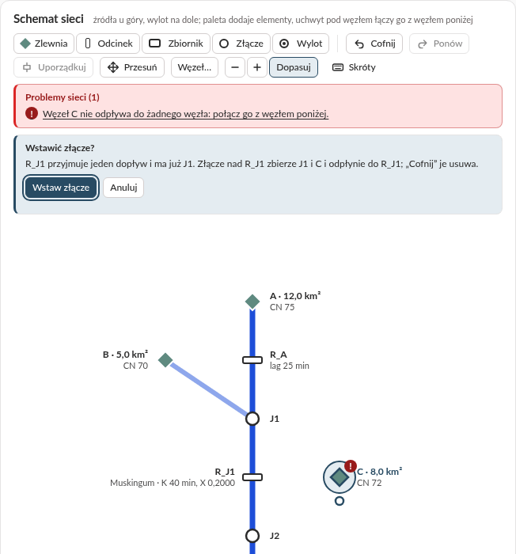
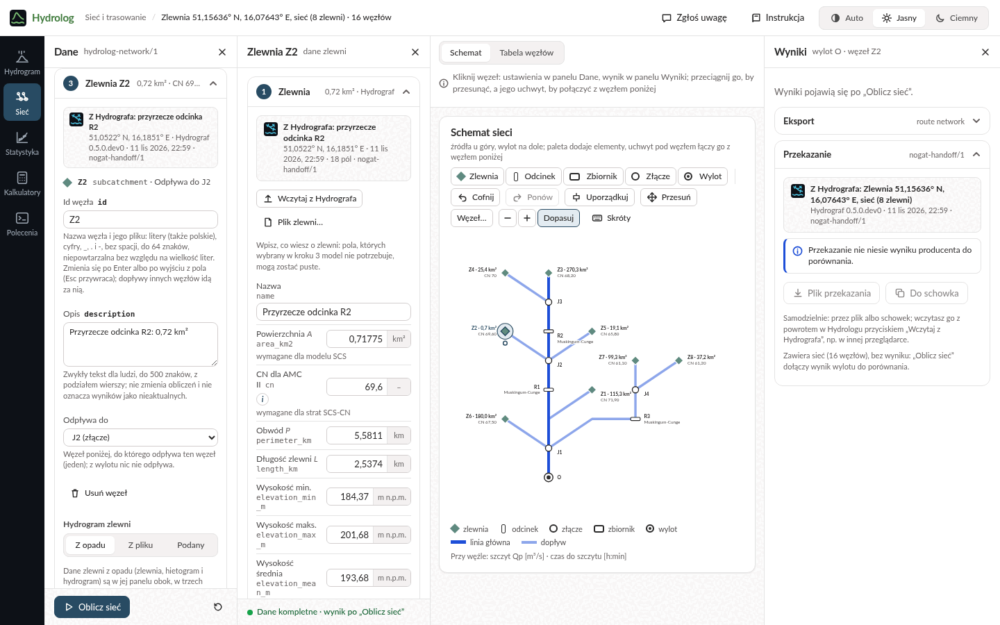

Przewodnik użytkownika
Hydrolog w przeglądarce
Ile wody spłynie po ulewie, jak fala płynie rzeką i jak często zdarzają się duże przepływy: obliczenia hydrologiczne bez instalowania programów i bez znajomości wzorów.
To wersja rozwojowa: wygląd, funkcje i liczby mogą się jeszcze zmieniać.
Na start · bez szczegółów technicznych
Na start
Czym jest Hydrolog?
Hydrolog to kalkulator hydrologiczny w przeglądarce. Szacuje, ile wody spłynie do potoku lub rzeki po silnym deszczu i kiedy będzie jej najwięcej, jak taka fala zmienia się, płynąc dalej korytem i przez zbiorniki, oraz jak często w danej rzece zdarzają się duże przepływy.
Wystarczy przeglądarka na komputerze albo telefonie. Nie trzeba znać wzorów: Hydrolog liczy sam, a przycisk przy polu, metodzie lub uwadze wyjaśnia, co oznacza dana wartość, z jakiego wzoru pochodzi i w jakim zakresie warto go stosować.
Hydrolog nie ma mapy. Z internetu pobiera tylko jedno: wysokość opadu projektowego z atlasu PMAXTP IMGW-PIB dla punktu, który podasz. Liczby opisujące zlewnię (powierzchnię, długości, spadki, CN) wpisujesz albo wczytujesz z pliku, na przykład z Hydrografa, który wyznacza zlewnię na mapie. Każda sekcja jest na początku pusta, bez przykładowych danych; ten przewodnik ma dla każdej sekcji przykład krok po kroku: co wpisać albo wczytać i jaki wynik wyjdzie.
Czego się spodziewać, a czego nie
Hydrolog da Ci
Największy przepływ, czas, po jakim nadejdzie, i objętość wody, która spłynie ze zlewni.
Jak fale z kilku zlewni łączą się, spóźniają i spłaszczają w korytach i zbiornikach.
Przepływ, który w danej rzece zdarza się średnio raz na 10 albo na 100 lat, policzony z pomiarów z wielu lat.
Przy każdym wyniku: dane, uwagi o zakresie stosowania metod i polecenie, które powtórzy obliczenie poza przeglądarką.
Hydrolog nie jest
Nie korzysta z bieżących pomiarów ani prognoz pogody: nie powie, czy rzeka wyleje jutro. Ostrzeżenia hydrologiczne wydaje IMGW-PIB.
Nie pokazuje, które tereny zaleje woda, i nie liczy poziomu wody w rzece. Oficjalne mapy zagrożenia powodziowego publikują Wody Polskie.
Wyniki to szacunki z uproszczonych metod, zależne od danych, które podasz; prawdziwy przepływ może być wyraźnie inny. Do decyzji i projektów potrzebna jest ocena specjalisty.
Nie pobiera danych o terenie ani pomiarów opadów i przepływów: wpisujesz je albo wczytujesz z pliku. Pobiera jedynie wysokość opadu projektowego z atlasu PMAXTP IMGW-PIB.
Na jakie pytania odpowiada?
- Ile wody popłynie potokiem po bardzo silnej ulewie i kiedy będzie jej najwięcej?
- Hydrogram zlewni: przepływ największy, czas do niego i objętość wody.
- Czy wezbranie będzie większe, gdy gleba jest już mokra po wcześniejszych deszczach?
- Hydrogram zlewni, przełącznik wilgotności gleby przed opadem.
- Jak zmieni się odpływ, gdy w zlewni przybędzie zabudowy albo ubędzie lasu?
- Kalkulatory: liczba CN dla gleby i pokrycia terenu; nową wartość wpisujesz w Hydrogramie zlewni.
- Jak szybko woda spływa z najdalszego miejsca zlewni?
- Kalkulatory: czas koncentracji policzony sześcioma metodami.
- Jak zmienia się fala, gdy płynie długim korytem albo przez staw lub zbiornik?
- Sieć i trasowanie.
- Jak duży przepływ zdarza się w tej rzece średnio raz na 100 lat?
- Statystyka przepływów, z największych przepływów kolejnych lat.
- Jaki reżim ma rzeka, jak długo trwają niżówki albo ile było dni z mrozem?
- Analiza szeregów stacji, z wieloletniego szeregu dobowego stacji.
Kto może korzystać?
Ile wody i jak szybko spływa po ulewie do potoku, stawu czy mokradła i co w zlewni zmieniają las, łąki, pola i zabudowa.
Wstępny szacunek wody spływającej po ulewie, zanim zleci się dokładne obliczenia.
Metody z podręczników hydrologii na przykładzie prawdziwej zlewni, ze wzorami i źródłami pod przyciskiem .
Szybki pierwszy szacunek oraz wiersz polecenia, który powtórzy obliczenie w skrypcie.
Pierwszy wynik w trzech krokach
- Opisz zlewnię i deszcz
Wybierz „Hydrogram” na pasku sekcji (po lewej, a na telefonie na dole). W kroku „Zlewnia” wpisz zlewnię potoku Kamiennik do Świerzawy: powierzchnia 37,22 km², CN 65, długość najdłuższej drogi spływu 15,88 km i jej spadek 0,0114 m/m. W kroku „Hietogram” zostaw PMAXTP, wpisz punkt ujścia zlewni (szerokość geograficzna 51,01544, długość 15,88984), wybierz p 1% i 12 h, a krok czasowy ustaw na 10 min. Hydrolog sam pobierze z atlasu PMAXTP IMGW-PIB wysokość opadu: 101,82 mm (deszcz, jaki zdarza się średnio raz na 100 lat).
- Wybierz model i przeczytaj wynik
W kroku „Hydrogram” wybierz model SCS: Hydrolog sprawdzi dane i policzy. W panelu „Wyniki”: największy przepływ 54,20 m³/s nadejdzie po 6:40 h od początku deszczu, a z całej ulewy spłynie 977 225 m³ wody. Wykres w środku pokazuje deszcz u góry i odpływ pod nim.
- Zmień jedną rzecz
W kroku „Hydrogram”, w części „Straty SCS-CN”, przełącz wilgotność poprzedzającą z II na III (gleba mokra po wcześniejszych deszczach). Wynik przeliczy się sam: 105,97 m³/s.
Pozostałe pola kroku „Zlewnia” mogą zostać puste: model SCS z czasem koncentracji Kirpicha czyta tylko te cztery liczby, czyli powierzchnię, CN oraz długość i spadek najdłuższej drogi spływu. Pełne dane przykładu są w rozdziale 02. Wysokość opadu to odpowiedź atlasu z listopada 2026: gdy IMGW-PIB zaktualizuje atlas, wysokość i wynik mogą się nieco zmienić. Przycisk „Wyczyść” u dołu panelu „Dane” czyści kroki. Plakietka na górnym pasku mówi, czy wynik jest aktualny; „Instrukcja” obok niej otwiera okno powitalne z odnośnikiem do tego przewodnika. Dalej: rozdział 01.
Słowniczek
- Zlewnia
- Obszar, z którego woda deszczowa spływa do wybranego miejsca na rzece lub potoku. Jej granica, dział wodny, biegnie grzbietami wzniesień.
- Przepływ
- Ilość wody, która w ciągu sekundy płynie przez przekrój rzeki, w metrach sześciennych na sekundę (m³/s); 1 m³ to 1000 litrów.
- Opad projektowy
- Umowny silny deszcz przyjmowany do obliczeń, opisany wysokością (mm), czasem trwania i prawdopodobieństwem, np. taki, który zdarza się średnio raz na 100 lat (p = 1%). W Polsce takie wysokości podaje atlas PMAXTP opracowany przez IMGW-PIB.
- Hietogram
- Wykres opadu w czasie: ile milimetrów deszczu spada w kolejnych odstępach, np. co 10 minut.
- Hydrogram
- Wykres przepływu w czasie: jak po deszczu rośnie i opada ilość wody płynącej w cieku. Jego szczyt to przepływ największy, Qmax.
- CN
- Liczba od 0 do 100 (od ang. curve number) mówiąca, jak łatwo deszcz spływa po terenie zamiast wsiąkać. Zależy od gleby i pokrycia terenu: las ma małą, zabudowa dużą. Im większa, tym więcej wody spływa.
- Czas koncentracji
- Czas, w jakim woda spływa z najdalszego miejsca zlewni do jej wylotu. Im krótszy, tym szybciej rośnie fala.
- Trasowanie fali
- Obliczenie, jak fala wezbraniowa zmienia się, płynąc korytem rzeki albo przez zbiornik. Zwykle przychodzi później i jest niższa, bo część wody chwilowo zatrzymuje się po drodze.
01 · Orientacja
Ekran i wspólne elementy

- Górny pasek
- Znak Hydrologa (powrót do pierwszej sekcji), nazwa sekcji i jej kontekst (np. zlewnia i opad), plakietka stanu wyniku, „Zgłoś uwagę” (zgłoszenie błędu albo pomysłu), „Instrukcja” (okno powitalne z odnośnikiem do tego przewodnika), „Aplikacje” (inne aplikacje ekosystemu Nogat, np. Hydrograf, każda w swojej karcie; przycisk jest tylko wtedy, gdy serwer zna ich adresy, a w serwisie publicznym jego lista kończy się odnośnikiem „Regulamin”) i motyw: Auto, Jasny, Ciemny.
- Pasek sekcji
- Hydrogram, Sieć, Statystyka, Kalkulatory, Polecenia: po lewej, a na telefonie na dole. Sekcja pamięta swoje dane i ostatni wynik, gdy przechodzisz do innej.
- Panel „Dane”
- Po lewej: formularz, często w ponumerowanych krokach, które można zwinąć. Na dole przycisk obliczenia (w sekcjach, które go mają) i „Wyczyść”, który wraca do stanu pierwszej wizyty: pustych pól, bez przykładu. Pusta sekcja mówi, co wpisać, i prowadzi do swojego przykładu w tym przewodniku.
- Środek
- Wykresy i tabele; nad nimi przełącznik widoku i krótka podpowiedź.
- Panel „Wyniki”
- Po prawej: najważniejsze liczby w kafelkach, uwagi, tabele, eksport i wywołanie.
- Stopka
- Tylko w serwisie publicznym: pod sekcją, a na telefonie nad paskiem sekcji, zdanie o tym, czym jest serwis, i odnośnik „Regulamin”. Regulamin, ten przewodnik i inne strony spoza aplikacji otwierają się w nowej karcie, bo zamknięcie albo odświeżenie karty aplikacji kończy jej sesję (zob. Twoje dane).
Plakietka stanu wyniku
- Wynik aktualny wyniki odpowiadają danym w panelu „Dane”.
- Liczenie… Hydrolog liczy wynik dla zmienionych danych.
- Dane zmienione: oblicz ponownie wyniki pokazują poprzednie dane; naciśnij przycisk obliczenia (w Sieci, Kalkulatorach i Poleceniach; Hydrogram zlewni i Statystyka liczą się same).
- Dane niepełne popraw pole oznaczone na czerwono; ostatni wynik zostaje na ekranie, oznaczony jako nieaktualny.
- Błąd danych Hydrolog nie policzył wyniku; opis błędu stoi przy polu albo nad formularzem.
Objaśnienia

Przycisk przy polu, metodzie albo uwadze otwiera objaśnienie: co to jest, wzór ze zmiennymi i jednostkami, zakres stosowania, jak odczytać wartość i źródła. Zakres stosowania, razem z publikacją, z której pochodzi, podaje Hydrolog; jest porównany z Twoimi danymi i oznaczony „w zakresie” albo „poza zakresem”. „Więcej w instrukcji” otwiera dłuższy opis metody w rozdziale Metody obliczeń. Objaśnienie zamyka , klawisz Esc albo kliknięcie obok.
Uwagi, wykresy i wywołanie
- Uwagi w panelu „Wyniki”: komunikaty Hydrologa („Informacja”, „Uwaga”) z ich kodem, także o wartości poza typowym zakresem metody, a w Hydrogramie zlewni przed nimi potwierdzenia, że dane mieszczą się w zakresie stosowania wybranych metod. Komunikat bez polskiego tłumaczenia ma dopisek (EN).
- Wykresy mają odczyt wartości: najedź kursorem albo przejdź do wykresu klawiszem Tab i przesuwaj się strzałkami (Shift lub Page Up/Page Down o dziesięć kroków, Home, End, Esc kończy odczyt).
- Wywołanie to to samo obliczenie poza przeglądarką: wiersz polecenia (CLI), Python albo MCP dla asystentów AI, z przyciskiem kopiowania.
Szerokość paneli
Przeciągnij krawędź panelu, aby go poszerzyć albo zwęzić. Z klawiatury: przejdź do krawędzi klawiszem Tab i użyj strzałek (16 px, z Shift 64 px), Home i End; Enter albo dwuklik przywraca szerokość domyślną. Przeglądarka zapamiętuje szerokości dla wszystkich sekcji. w nagłówku zamyka panel, a przycisk „Dane” lub „Wyniki” nad wykresami otwiera go z powrotem.
02 · Sekcja
Hydrogram zlewni
Jedna zlewnia i jeden deszcz: Hydrolog liczy, jaka część opadu spłynie (metoda SCS-CN), i rozkłada ją w czasie hydrogramem jednostkowym. Wynik to hydrogram odpływu z jego szczytem, czasem do szczytu i objętością. Liczy się sam po każdej zmianie danych: nie ma przycisku obliczenia.

Trzy kroki panelu „Dane”
- Zlewnia. Dane zlewni wpisane ręcznie, z pliku albo z przekazania. „Plik zlewni…” czyta plik JSON zlewni w formacie WatershedParameters (np. z Hydrografa) w przeglądarce, bez wysyłania; wystarczy w nim powierzchnia. „Wczytaj z Hydrografa” wczytuje przekazanie: zlewnię razem z opadem i modelem (Przekazanie). Pole zmienione względem pliku jest oznaczone, a „przywróć” wraca do wartości źródła. Pola, których wybrany model nie czyta, mogą zostać puste; te, które czyta, mają dopisek „wymagane dla …”. Spadki podajesz w m/m, a obok widać je w procentach.
- Hietogram. PMAXTP: podajesz punkt zlewni, np. jej ujście (szerokość i długość geograficzną w stopniach dziesiętnych, WGS84), wybierasz prawdopodobieństwo i czas trwania z tablic atlasu oraz metodę (POT, zalecaną przez IMGW-PIB, albo AMP), a Hydrolog pobiera z atlasu PMAXTP IMGW-PIB wysokość opadu. Wysokości nie wpisuje się: pole „Wysokość opadu” tylko ją pokazuje, a przeglądarka zapamiętuje ją razem z danymi, więc po odświeżeniu strony nie jest pobierana ponownie. Wiersze, które IMGW-PIB każe podawać przy tych danych (źródło wysokości opadu), i odnośnik do regulaminu danych PMAXTP są w pasku pod wykresami (zob. Źródła danych). Hietogram: wysokość i czas trwania podane ręcznie. Własna seria: wysokości opadu w kolejnych krokach, wklejone z arkusza albo wczytane z kolumny pliku CSV. Rozkład deszczu w czasie: blokowy, trójkątny, Beta albo Euler II; krok czasowy (puste pole to 5 min).
- Hydrogram. Model hydrogramu jednostkowego, który rozkłada opad efektywny w czasie: SCS, Nash (parametry metodą Lutza ze zlewni albo podane), Clark albo Snyder. Na początku żaden nie jest wybrany: dopiero wybór modelu uruchamia sprawdzenie danych i obliczenie. Pod wyborem widać tylko pola wybranego modelu: dla SCS i Clarka czas koncentracji (metoda Kirpich, NRCS, Giandotti, FAA, Kerby, Kerby–Kirpich albo czas podany ręcznie, a przy FAA i metodach Kerby’ego ich pola spływu po stoku), dla Nasha „Metoda Lutza” albo „Podane n i K”, dla Snydera długość do środka ciężkości i jego współczynniki Ct i Cp (długość cieku L to długość cieku głównego z kroku 1; obie długości Snyder bierze tylko ze zlewni). Metoda Lutza bierze długość i spadek najdłuższej drogi spływu z kroku 1 oraz długość do środka ciężkości, szorstkość koryta i udział lasów i zabudowy spod wyboru; n i K wylicza z nich Hydrolog w tym samym obliczeniu i pokazuje je w polach tylko do odczytu. Na końcu „Straty SCS-CN”, wspólne dla wszystkich modeli: wilgotność poprzedzająca (I sucho, II przeciętnie, III mokro; CN zmienia się wtedy, jak pokazuje podpowiedź) i straty początkowe λ (puste pole to 0,2). „Porównaj metody” otwiera porównanie metod czasu koncentracji w Kalkulatorach.
Po wyborze modelu puste pole, którego model potrzebuje, jest czerwone („Podaj wartość: potrzebna dla metody Kirpicha”) i wstrzymuje obliczenie; tak samo wartość niepoprawna, np. „Najwyżej 100 (podano 150)”, którą widać od razu. Wartość poza typowym zakresem metody jest pomarańczowa, w przykładzie spadek najdłuższej drogi spływu („Poza typowym zakresem od 0,03 do 0,1 (kirpich)”): to uwaga Hydrologa, który podaje zakres metody i jego źródło, a wynik liczy się mimo niej. Pod wyborem modelu podsumowanie wymienia, czego brakuje, co poprawić i co jest poza zakresem, z odnośnikiem do każdego pola. Dopóki dane są niepełne, na ekranie zostaje ostatni wynik, oznaczony jako nieaktualny. Nagłówek kroku streszcza jego ustawienia, np. „SCS · 187,4 min · Kirpich”. Przekazanie wyniku (Przekazanie) wymaga pełnej zlewni: powierzchni, obwodu, długości zlewni oraz wysokości najmniejszej i największej.
Przykład: Kamiennik — Świerzawa
Zlewnia potoku Kamiennik do Świerzawy i deszcz, jaki zdarza się średnio raz na 100 lat. Do pierwszego wyniku wystarczą pola pogrubione; pozostałe przydają się innym metodom i modelom oraz przekazaniu.
| Krok i pole | Wartość |
|---|---|
| 1 · Nazwa | Kamiennik — Świerzawa |
| 1 · Powierzchnia A | 37,22 km² |
| 1 · CN dla AMC II | 65 |
| 1 · Obwód P | 40,89 km |
| 1 · Długość zlewni L | 16,05 km |
| 1 · Wysokość min., maks., średnia | 257,3; 475,1; 363,2 m n.p.m. |
| 1 · Średni spadek zlewni | 0,082 m/m |
| 1 · Długość cieku głównego | 14,78 km |
| 1 · Długość najdłuższej drogi spływu L | 15,88 km |
| 1 · Spadek najdłuższej drogi spływu S | 0,0114 m/m |
| 2 · PMAXTP: punkt (szerokość, długość) | 51,01544; 15,88984 |
| 2 · PMAXTP: p, czas trwania | 1%, 12 h |
| 2 · PMAXTP: metoda; pobrana wysokość opadu | POT; 101,82 mm |
| 2 · Rozkład w czasie | Beta, α i β puste (2 i 5) |
| 2 · Krok czasowy Δt | 10 min |
| 3 · Model, metoda tc, AMC | SCS, Kirpich, II |
| 3 · Nash (Lutz) i Snyder: Lc | 6,76 km |
| 3 · Nash (Lutz): szorstkość koryta, lasy, zabudowa | 0,035; 57,4%; 1% |
| 3 · FAA i Kerby: spływ po stoku L, spadek stoku | 0,3 km; 0,082 m/m |
| 3 · FAA: C; Kerby: N | 0,25; 0,4 |
Punkt to ujście zlewni wyznaczone w Hydrografie. Najdłuższą drogę spływu też wyznaczył Hydrograf (5 listopada 2026): ma 15,88 km od punktu zlewni najdalszego hydraulicznie (zwykle leży na dziale wodnym, ale może na grzbiecie wewnątrz zlewni), na wysokości 440,16 m n.p.m. do ujścia na wysokości 258,72 m n.p.m., więc jej spadek to (440,16 − 258,72) / 15 883 m = 0,0114 m/m. Wynik: Qmax 54,20 m³/s po 6:40 h, objętość 977 225 m³, współczynnik odpływu 0,258 (kafelki opisuje lista poniżej). Z wilgotnością III: 105,97 m³/s. Wysokość 101,82 mm podał atlas w listopadzie 2026; gdy IMGW-PIB go zaktualizuje, wysokość i wynik mogą się nieco zmienić.
Spróbuj: przy wilgotności II wybierz w kroku „Hydrogram” model Nash i „Metoda Lutza”, a pod wyborem wpisz z tabeli długość do środka ciężkości, szorstkość koryta, lasy i zabudowę. Hydrolog wyliczy ze zlewni n 3,61 i K 92,13 min, a szczyt spadnie do 35,03 m³/s po 9:10 h: ten sam opad efektywny spływa przez kaskadę Nasha wolniej niż przez hydrogram SCS.
Wykresy i wyniki
- Hietogram i hydrogram na wspólnej osi czasu: opad całkowity i efektywny u góry, przepływ pod nimi, ze szczytem opisanym na wykresie. Niżej składowe obliczenia: opad i straty narastająco oraz hydrogram jednostkowy. Widok „Tabela” pokazuje szeregi czasowe, z wyróżnionym wierszem szczytu.
- Kafelki: Qmax, czas do szczytu, objętość i współczynnik odpływu. W przykładzie: 54,20 m³/s, 6:40 h, 977 225 m³ i 0,258, czyli spływa nieco ponad jedna czwarta deszczu.
- Bilans opadu: jak opad dzieli się na straty początkowe, infiltrację i opad efektywny; Parametry obliczenia: czas koncentracji, parametry hydrogramu jednostkowego, krok.
- Przepływ odniesienia: wynik ze Statystyki przepływów („Do porównania”) rysuje się jako pozioma linia na hydrogramie; „Usuń odniesienie” go zdejmuje.
03 · Sekcja
Sieć i trasowanie
Kilka zlewni połączonych korytami, zbiornikami i złączami, aż do jednego wylotu. Sieć budujesz na schemacie, podobnie jak model zlewni w programie HEC-HMS, w kolejności, w jakiej myśli o niej hydrolog: najpierw krok czasowy i opad sieci, potem elementy na schemacie (dodajesz je, łączysz każdy z elementem poniżej, nadajesz im nazwy i opisy), a na końcu dane każdej zlewni w jej panelu, w tych samych trzech krokach co w Hydrogramie zlewni. Hydrolog liczy hydrogram każdej zlewni, przeprowadza fale przez odcinki i zbiorniki i sumuje je w złączach. W przeciwieństwie do Hydrogramu zlewni sieć liczy się na przycisk „Oblicz sieć”.
![Sieć i trasowanie po obliczeniu przykładu z wybraną zlewnią C, w czterech kolumnach: w panelu Dane krok Sieć z krokiem czasowym Δt 5 min i opadem sieci (źródło Hietogram, 30 mm w 60 min, rozkład blokowy); obok panel Zlewnia C z krokiem Hietogram ustawionym na Jak w sieci (opad sieci z kroku 1: hietogram 30,0 mm w 1 h, z odnośnikiem do kroku 1, krok czasowy sieci tylko do odczytu) i krokiem Hydrogram z modelem SCS; w środku schemat ze zlewniami A, B i C, odcinkami R_A i R_J1, złączami J1 i J2 i wylotem OUT, przy każdym węźle szczyt i czas do szczytu; w panelu Wyniki kafelki wylotu 19,1 m³/s po 2:25 h i hydrogram zlewni C.](img/siec.png)
- Sieć zaczynasz w kroku „Sieć” panelu „Dane”: „Nowa sieć” otwiera pusty schemat, „Plik sieci…” wczytuje dokument sieci (
hydrolog-network/1) razem z plikami, które czyta („Pliki towarzyszące…”: dopływy, tabele zbiorników), a „Wczytaj z Hydrografa” otwiera przekazanie (zob. Przekazanie i Sieć z Hydrografa). Na początku sekcja jest pusta. W tym samym kroku są nazwa i opis sieci, a pod nimi jej krok czasowy i opad. - Opad sieci podajesz najpierw, zanim postawisz elementy: w kroku „Sieć” jest „Krok czasowy Δt”, a pod nim „Opad sieci” z tymi samymi polami co krok „Hietogram” Hydrogramu zlewni. „Brak” wystarczy sieci samych hydrogramów podanych. PMAXTP to punkt, prawdopodobieństwo, czas trwania i metoda atlasu: wysokość opadu pobiera Hydrolog, a przeglądarka ją zapamiętuje. „Hietogram” to wysokość, czas trwania i rozkład w czasie, a „Własna seria” wysokości opadu w kolejnych krokach Δt. Ten opad bierze każda zlewnia z opadu, która nie ma własnego. „Nowa sieć” otwiera właśnie ten krok, a pusty schemat przypomina o tej kolejności, ale niczego nie blokuje.
- Schemat jest rysowany pionowo: źródła u góry, wylot na dole. Węzeł stoi na tym polu siatki, na które go postawisz; sieć z pliku bez położeń węzłów Hydrolog układa sam: linia główna prosto, dopływy z boków. Kliknij węzeł: jego ustawienia otworzą się w panelu „Dane”, a wynik w panelu „Wyniki”. Te same węzły są na liście w kroku „Węzły” i w widoku „Tabela węzłów”, z opisem i węzłem, do którego odpływają.
- Ustawienia węzła (krok 3): id, opis, „Odpływa do” i parametry zależne od rodzaju węzła: odcinek (metoda: lag, Muskingum, Muskingum-Cunge, kaskada zbiorników albo level-pool, i jej parametry), zbiornik (tabela pojemność–odpływ), złącze i wylot (bez parametrów), a zlewnia rodzaj hydrogramu: „Z opadu”, „Podany” (czasy i przepływy) albo „Z pliku” (kolumna pliku dopływów). Dane zlewni z opadu są w jej panelu obok. Po zmianie parametru, id albo połączeń plakietka mówi „Dane zmienione: oblicz ponownie”, a wyniki są oznaczone jako dotyczące poprzednich danych. Przesunięcie węzła i opis nie zmieniają wyniku.
- Panel zlewni: wybór zlewni z opadu otwiera obok panelu „Dane” jej panel, np. „Zlewnia C”, z trzema krokami Hydrogramu zlewni (zob. Hydrogram zlewni): te same pola w tej samej kolejności, to samo sprawdzanie danych i te same objaśnienia . „Zlewnia” to dane zlewni; jej „Plik zlewni…” i „Wczytaj z Hydrografa” wczytują jedną zlewnię do wybranego węzła, który zachowuje id, połączenia i miejsce na schemacie. „Hietogram” zaczyna od „Jak w sieci”: opisu opadu sieci z odnośnikiem do kroku „Sieć”; PMAXTP, „Hietogram” albo „Własna seria” dają zlewni własny opad, zawsze z krokiem Δt sieci. „Hydrogram” najpierw pyta o model hydrogramu jednostkowego, potem pokazuje tylko jego pola, a na końcu straty SCS-CN. Zlewnia bez modelu albo bez żadnego opadu, ani własnego, ani sieci („Brak opadu”), jest problemem sieci. Po „Oblicz sieć” panel pokazuje wartości z tego obliczenia, np. czas koncentracji, dopóki nie zmienisz danych zlewni. zamyka panel, a zlewnia zostaje wybrana; wybór odcinka, zbiornika, złącza albo wylotu go zamyka. Gdy obok wykresów brakuje miejsca, najpierw zwęża się panel „Wyniki”, a na węższym ekranie ustępuje on panelowi zlewni: przycisk „Wyniki” pokazuje go wtedy w tym miejscu.
- Wyniki: przy każdym węźle schematu szczyt i czas do szczytu; w panelu „Wyniki” kafelki wylotu, a dla wybranego węzła jego hydrogram (dla odcinka dopływ i odpływ), parametry i rzędne.
Elementy sieci
Paleta nad schematem ma pięć elementów. Odpowiadają elementom modelu zlewni HEC-HMS; źródło HEC-HMS zastępuje zlewnia z podanym hydrogramem, a rozdziału wody Hydrolog nie ma.
| Element | W HEC-HMS | Co robi | Dopływy |
|---|---|---|---|
| Zlewnia | Subbasin, Source | daje hydrogram: z opadu, podany (czasy i przepływy) albo z kolumny pliku dopływów | żadnego |
| Odcinek | Reach | przesuwa i spłaszcza falę: lag, Muskingum, Muskingum-Cunge, kaskada zbiorników albo level-pool | dokładnie jeden |
| Zbiornik | Reservoir | zatrzymuje część fali według krzywej pojemność–odpływ | dokładnie jeden |
| Złącze | Junction | sumuje dopływy | co najmniej jeden |
| Wylot | Sink | koniec sieci: jego hydrogram jest wynikiem; w sieci jest dokładnie jeden | dokładnie jeden |
| brak | Diversion | rozdziału nie ma: każdy węzeł odpływa do jednego węzła poniżej, więc woda nie dzieli się na dwie drogi | – |
Nowy element dostaje id Z1, R1, ZB1 albo J1 z pierwszym wolnym numerem, a wylot OUT; możesz je zmienić. Id jest nazwą węzła i jego pliku wyników: litery (także polskie), cyfry, _, . i -, bez spacji, do 64 znaków, różne bez względu na wielkość liter. Inne słowa wpisz w „Opis”: zwykły tekst do 500 znaków, także w kilku wierszach.
Budowanie sieci


- Dodawanie
- Przeciągnij element z palety na wolne pole schematu albo kliknij element, a potem wolne pole. Najwygodniej zacząć od wylotu i dodawać elementy nad nim. Klawisz D na węźle (albo „Dodaj dopływ…” w menu węzła) stawia nowy element na wolnym polu nad nim i od razu łączy go z tym węzłem. „Dodaj węzeł” w kroku „Węzły” stawia element obok wybranego węzła, bez połączeń.
- Łączenie
- Każdy węzeł poza wylotem odpływa do jednego węzła poniżej. Przeciągnij uchwyt (kółko pod węzłem) na węzeł, do którego ma odpływać; w trakcie cel pokazuje „✓” albo „⊘” z przyczyną. Bez przeciągania: „Połącz z…” w menu węzła i kliknięcie celu, klawisz P i strzałki, albo pole „Odpływa do” w ustawieniach węzła. Nowe połączenie zastępuje dotychczasowe. Pętli, dopływu do zlewni ani odpływu z wylotu nie da się zrobić, a komunikat mówi dlaczego. Drugi dopływ do odcinka, zbiornika albo wylotu, które przyjmują jeden, kończy się pytaniem „Wstawić złącze?”: złącze nad tym węzłem zbierze oba dopływy.
- Odłączanie i usuwanie
- Kliknij połączenie i naciśnij Delete, albo wybierz „Odłącz” (O) w menu węzła, albo „brak” w polu „Odpływa do”. „Usuń” (Delete albo „Usuń węzeł” w ustawieniach) usuwa węzeł z jego połączeniami, a „Usuń i połącz” dodatkowo łączy jego jedyny dopływ z węzłem poniżej.
- Id i opis
- „Zmień id” w menu węzła albo F2 przenosi do pola „Id węzła”. Nowe id obowiązuje po Enter albo po wyjściu z pola, a połączenia innych węzłów idą za nim; zlewnia, która czytała kolumnę pliku dopływów pod dawnym id, czyta ją dalej. „Opis” węzła i „Opis sieci” (krok „Sieć”) nie zmieniają obliczeń; opis węzła widać w jego podpowiedzi i w „Tabeli węzłów”.
- Przesuwanie i układ
- Przeciągnij węzeł na wolne pole, naciśnij Shift ze strzałką albo wybierz „Przesuń” i kliknij wolne pole. „Uporządkuj” ustawia węzły tak, jak układa je Hydrolog; działa, gdy budowa sieci nie ma problemów, także zanim podasz dane węzłów. Do tego czasu sieć z pliku bez położeń stoi w rzędach oznaczonych „Układ tymczasowy”. „−”, „+” i „Dopasuj” zmieniają powiększenie.
- Problemy
- Po każdej zmianie strona sprawdza budowę sieci tak, jak sprawdza ją Hydrolog: lista „Problemy sieci” nad schematem wymienia wszystkie problemy naraz (np. węzeł, który nigdzie nie odpływa, pętlę, brak wylotu, niepełne dane węzła), węzeł z problemem ma znak „!”, a kliknięcie problemu wybiera jego węzeł. Gdy lista nie jest pusta, „Oblicz sieć” niczego nie liczy, tylko wybiera węzeł pierwszego problemu. Gdy krawędź biegnie przez inny węzeł, mówi o tym wskazówka: obliczeń to nie zmienia, a „Uporządkuj” rozkłada sieć bez takich przejść.
- Cofnij i ponów
- „Cofnij” i „Ponów” (Ctrl+Z; Ctrl+Shift+Z albo Ctrl+Y) cofają i przywracają do 100 zmian: dodanie, połączenie, przesunięcie, zmianę id albo parametru. Sieć zostaje w przeglądarce po ponownym otwarciu strony, historia zmian nie.
- Zapisywanie
- „Zapisz sieć” pobiera dokument sieci z położeniami i opisami węzłów: otwarty ponownie wygląda tak samo, a schemat, który rysuje z niego Hydrolog (
route network --schematic, „Schemat Hydrologa” w eksporcie), jest tym samym obrazem. Sieć z problemami zapisuje ten sam przycisk jako „Zapisz szkic”: Hydrolog policzy ją dopiero po poprawieniu problemów, a strona otworzy ją jak każdy plik. „Wyczyść” i „Nowa sieć” pytają, zanim zamkną sieć zmienioną od otwarcia albo zapisu. - Zlewnia z Hydrografa
- „Dodaj zlewnię z Hydrografa” w kroku „Sieć” dodaje do otwartej sieci zlewnie z przekazania, bez jego wylotu, na wolnych polach górnego rzędu schematu; potem połącz je z siecią. Id, które sieć już ma, dostaje kolejny numer (
Z1staje sięZ2), a opisem zlewni zostaje temat przekazania. Sieć zachowuje swój krok czasowy, a opad przekazania, inny niż opad sieci, staje się opadem tej zlewni.
Klawisze schematu
Schemat jest jednym przystankiem klawisza Tab; dalej między węzłami przechodzą strzałki. Litery i znaki z tabeli działają tylko wtedy, gdy schemat ma fokus, a w polu tekstowym działa zwykłe cofanie przeglądarki. Tę samą listę pokazuje przycisk „Skróty” albo klawisz ?. Całą sieć zbudujesz samą klawiaturą: Enter na elemencie palety stawia go obok wybranego węzła.
| Klawisze | Działanie |
|---|---|
| strzałki | najbliższy węzeł w tym kierunku |
| Enter | wybierz węzeł: ustawienia w panelu „Dane”; przy zlewni z opadu przejdź do jej panelu |
| spacja | wybierz węzeł |
| Shift + strzałka | przesuń węzeł o jedno pole |
| D | dodaj dopływ: menu rodzajów elementu |
| P | połącz z węzłem poniżej: strzałki wybierają cel, Enter łączy |
| O | odłącz od węzła poniżej |
| Delete | usuń węzeł albo wybrane połączenie |
| F2 | zmień id: pole w panelu „Dane” |
| Shift+F10, klawisz menu | menu węzła (także prawy przycisk myszy, długie dotknięcie albo „Węzeł…”) |
| Ctrl+Z | cofnij |
| Ctrl+Shift+Z, Ctrl+Y | ponów |
| +, − | powiększ, pomniejsz |
| ? | pokaż albo ukryj listę skrótów |
| Esc | przerwij przesuwanie, dodawanie albo łączenie |
Przykład: trzy zlewnie
Pobierz plik przykładu siec.json. W sekcji Sieć naciśnij „Plik sieci…” i wybierz pobrany plik: na schemacie pojawi się osiem węzłów. Sieć nie czyta innych plików, więc „Pliki towarzyszące…” nie są potrzebne.
| Węzeł | Dane |
|---|---|
| A · zlewnia | 12 km², CN 75, najdłuższa droga spływu 6 km o spadku 0,02 m/m; własny opad: Euler II, 45 mm w 60 min |
| B · zlewnia | 5 km², CN 70, najdłuższa droga spływu 3,5 km o spadku 0,0229 m/m; własny opad: szereg co 5 min (0; 2; 5; 10; 12; 6; 3 mm) |
| C · zlewnia | 8 km², CN 72, tc 60 min; opad sieci: blokowy, 30 mm w 60 min |
| R_A · odcinek | z A, metoda lag, 25 min |
| J1 · złącze | R_A i B |
| R_J1 · odcinek | z J1, Muskingum, K 40 min, X 0,2 |
| J2 · złącze, OUT · wylot | R_J1 i C, a dalej wylot |
Naciśnij „Oblicz sieć”. Wynik: wylot OUT ma szczyt 19,1 m³/s po 2:25 h.
Ta sama sieć od zera. Naciśnij „Nowa sieć”: otworzy się krok „Sieć”. Najpierw opad sieci: w „Opad sieci” wybierz „Hietogram”, rozkład „Blokowy”, wysokość 30 mm i czas trwania 60 min; krok czasowy może zostać pusty. Potem postaw z palety osiem elementów tak jak na obrazku: u góry zlewnię A, pod nią odcinek R_A, złącze J1, odcinek R_J1, złącze J2 i wylot OUT, zlewnię B z boku nad J1, a zlewnię C z boku nad J2. Zmień ich id na te z tabeli i połącz każdy węzeł z węzłem poniżej; „Uporządkuj” ustawi je tak, jak układa je Hydrolog, jeszcze zanim podasz ich dane. Odcinkom wybierz metodę i wpisz jej parametry w panelu „Dane”. Każdą zlewnię uzupełnij w jej panelu: w kroku „Zlewnia” powierzchnię, CN i najdłuższą drogę spływu (C jej nie potrzebuje); w kroku „Hietogram” zostaw zlewni C „Jak w sieci”, a zlewniom A i B daj własny opad z tabeli („Hietogram” z rozkładem Euler II albo „Własna seria”); w kroku „Hydrogram” wybierz model SCS, dla A i B z czasem koncentracji Kirpicha, a dla C z czasem podanym ręcznie, 60 min. „Oblicz sieć” da ten sam wynik, a „Zapisz sieć” zapisze plik, który otworzy się w tym samym układzie.
Spróbuj: wybierz odcinek R_A, zmień metodę z „lag” na „Muskingum”, wpisz K 30 min i X 0,2, a potem „Oblicz sieć”. Fala spłaszczy się w korycie: szczyt na wylocie spadnie do 18,0 m³/s i nadejdzie po 2:35 h.
Sieć z Hydrografa i pochodzenie węzłów
W Hydrografie wybierz „Wybierz zlewnię”, a nad mapą „Sieć zlewni”. Wskaż najpierw przekrój zamykający na cieku, potem punkty powyżej niego. Punkt blisko zbiegu cieków staje się węzłem J, a punkt poza zbiegiem węzłem P; identyfikatory są nadawane od przekroju zamykającego w górę sieci. Hydrograf dzieli teren na dopływy do węzłów (również dopływ cieku głównego) i przyrzecza odcinków, a między nimi wyznacza odcinki i złącza. Po „Oblicz charakterystyki” użyj „Plik przekazania” albo „Kopiuj do Hydrologa”; w Hydrologu „Wczytaj z Hydrografa” w kroku „Sieć” otwiera sieć ułożoną na schemacie (zob. Przekazanie). Każdy węzeł pamięta, skąd pochodzą jego dane.


- Pochodzenie zlewni pokazuje karta w kroku „Zlewnia” jej panelu i w kroku 3 panelu „Dane”, np. „Z Hydrografa: przyrzecze odcinka R2” albo „Z Hydrografa: dopływ do punktu J4”, z miejscem ujścia zlewni (szerokość i długość geograficzna) i datą przekazania; pola zmienione od wczytania wymienia dopisek „zmienione: …”. W przekazaniu z pokazanego przykładu jest osiem zlewni, trzy odcinki, złącza
J1–J4i wylotO:Z7to dopływ cieku głównego doJ4,Z8drugi dopływ, aZ2przyrzecze odcinkaR2. Pochodzenie opadu i modelu, gdy przekazanie je podaje, jest w krokach „Hietogram” i „Hydrogram”. Odcinek, złącze i wylot mają kartę w kroku 3 panelu „Dane”: odcinek opisuje pomiar długości i spadku, a złącze wskazuje zbieg, punkt lub przekrój zamykający. Węzeł bez własnego pochodzenia pokazuje kartę całego przekazania. - Czego Hydrograf nie podaje: opadu sieci i przekroju odcinków. Podaj opad sieci w kroku „Sieć”; do tego czasu każda zlewnia ma „Brak opadu”. „Oblicz sieć” oznacza potem odcinki znakiem „!”, dopóki nie wpiszesz w każdym szorstkości Manninga i szerokości dna. Zlewnie przychodzą z polami zlewni i stratami SCS-CN, a bez wskazanego modelu otwierają się z modelem SCS i czasem koncentracji Kirpicha, tak jak liczy je Hydrolog; możesz je zmienić w ich panelach.
- Płaski albo krótki odcinek: na odcinku płaskim, krótkim albo z wąskim korytem i dużym przepływem długość dyfuzji fali (D = Q / (T·S0·c)) jest długa wobec drogi, jaką fala przebywa w jednym kroku czasowym, i metoda Muskingum-Cunge nie ma wtedy nieujemnych wag dla żadnego podziału odcinka ani kroku. Hydrolog nie odrzuca takiej sieci: trasuje odcinek jako zbiornik liniowy (gdy odcinek jest dłuższy niż półtorej długości dyfuzji, jako kaskadę n ≈ L/D zbiorników), który zachowuje czas przepływu fali L/c, i liczy sieć dalej. Wybrany w „Wynikach” odcinek ma wtedy ostrzeżenie, np. „Odcinek R2 trasowano jako zbiornik liniowy o K = … min, bo przy kroku 5 min metoda Muskingum-Cunge nie daje nieujemnych wag…”, z długością odcinka, prędkością fali i długością dyfuzji; uwagi wyniku mają uwagę tego węzła, a w jego parametrach „Schemat obliczeń” to „zbiorniki liniowe”. Tłumienie fali na takim odcinku jest przybliżone. Odcinek, którego metoda nie przyjmuje kroku sieci (np. Muskingum z podaną liczbą pododcinków), „Oblicz sieć” odrzuca: błąd mówi, czy krok jest za krótki (z zakresem kroków, które pasują), czy za długi, a pod nim „Zamień na opóźnienie (lag)” z wpisanym czasem od razu liczy sieć od nowa, a „Zamień na zbiornik (level-pool)” czeka na tabelę pojemność–odpływ w „Dane”. Krok czasowy sieci jest w kroku 1 „Sieć”, w polu „Krok czasowy”; puste pole to krok domyślny (krok źródeł, a bez nich 5 min).
- Dalej: pochodzenie idzie za węzłem także po zmianie id, a zlewnia dodana przez „Dodaj zlewnię z Hydrografa” albo wczytana w panelu zlewni dostaje pochodzenie ze swojego przekazania. Przekazanie zapisane z Sieci niesie pochodzenie każdego węzła pod jego obecnym id, z polami zmienionymi od wczytania, a dane wpisane w Sieci mają pochodzenie „wpisane ręcznie”. Otwarte ponownie, np. w innej przeglądarce, pokazuje te same pochodzenia; karty podpisuje wtedy Hydrolog, który zapisał przekazanie.
04 · Sekcja
Statystyka przepływów
Z największych przepływów kolejnych lat (maksimów rocznych) Hydrolog dopasowuje rozkłady prawdopodobieństwa i podaje przepływy o zadanym okresie powtarzania, np. Q 1%: przepływ, który zdarza się średnio raz na 100 lat. Nie ma przycisku „Oblicz”: wynik liczy się sam chwilę po każdej zmianie szeregu albo okresów powtarzania, a niepełne dane nie uruchamiają obliczenia i zostawiają poprzedni wynik.

- Szereg: plik CSV wczytany do sesji („Z pliku CSV…”) z kolumnami odczytanymi z jego nagłówka, wartości wklejone („Wklej”) albo „Wczytaj z Archiwisty” z przekazania. W szeregu dobowym, np. w eksporcie z Obserwatora z kolumnami daty i przepływu, wystarczy wskazać kolumnę dat: Hydrolog sam wybierze maksima z pełnych lat hydrologicznych (od listopada do października). Na początku sekcja jest pusta: nie ma pliku ani wartości.
- Rozkłady: Hydrolog dopasowuje za każdym razem każdy z czterech rozkładów (log-normalny, GEV, Pearson III, Weibull) każdą z czterech metod estymacji parametrów: metodą L-momentów (
l_moments), największą wiarygodnością (mle), metodą momentów (moments) i najmniejszych kwadratów (least_squares, która idzie za największymi maksimami). „Rozkłady” i „Metody estymacji” wybierają tylko, które kombinacje pokazać (na początku wszystkie rozkłady metodą L-momentów; jeden rozkład i jedna metoda zostają zawsze wybrane), niczego nie przeliczają i są zapamiętywane. Kolor linii to rozkład, jej styl to metoda: L-momenty linia ciągła, największa wiarygodność kreskowana, momenty kropkowana, najmniejsze kwadraty kreska-kropka. Kombinacja, której metoda nie umie dopasować, jest pominięta z uwagą, a kombinacja, która nie obejmuje któregoś maksimum, nie ma AIC i stoi na końcu tabeli. „Wyróżniony w wynikach” zaczyna od „brak”: bez wyróżnionego okresu nie ma kafelka jego kwantyla, zaznaczonego wiersza tabeli kwantyli ani kwantyla zaznaczonego na wykresie prawdopodobieństwa, a „Do porównania” jest wyłączone. Wybrany okres trafia do kafelków, tabeli, wykresu i „Do porównania”, a wybór jest zapamiętywany. - Wyniki: wykres prawdopodobieństwa przewyższenia na siatce Gumbela (punkty to maksima, linie to kombinacje rozkładu i metody), pod nim, jeden pod drugim, dwa wykresy względem przepływu Q, „Gęstość prawdopodobieństwa” (gęstość każdej kombinacji, maksima roczne jako kreski na osi Q) i „Dystrybuanta” (F = 1 − p każdej kombinacji, maksima jako punkty w położeniu Weibulla), widok „Maksima roczne” z latami, kafelki, uwagi, tabela rozkładów z kolumną „Metoda” i miarami dopasowania oraz tabela kwantyli. Żadna oś nie zaczyna się poniżej zera, a zakresy osi zależą tylko od wyniku, nie od pokazanych ani aktywnej kombinacji: oś Q wykresów gęstości i dystrybuanty sięga większego z dwóch przepływów, największego maksimum i mediany Q 1% kombinacji, a oś gęstości 1,25 mediany największych gęstości kombinacji z AIC, więc skok gęstości przy granicy rozkładu ucina ramka wykresu. „Zakres osi” pod każdym wykresem ustawia własne granice „od” i „do” (okres powtarzania T i przepływ Q wykresu prawdopodobieństwa, Q i gęstość, Q dystrybuanty); puste pole to granica automatyczna, a „Auto” przywraca wszystkie granice wykresu. Po każdym obliczeniu aktywna jest najlepsza z pokazanych kombinacji (najmniejsze AIC): na wszystkich trzech wykresach jej krzywa jest pełna i gruba, pozostałe są przygaszone, a kafelki podają jej nazwę („Najlepszy”, gdy nią jest) i kwantyle. Kliknięcie wiersza tabeli rozkładów (albo Enter na zaznaczonym wierszu) czyni aktywną inną kombinację. Pole „W tabeli kwantyli” w każdym wierszu dodaje kolumnę kwantyli tej kombinacji do tabeli kwantyli i do eksportu CSV (kolumna
<rozkład>_<metoda>_m3s), w kolejności tabeli rozkładów; po obliczeniu zaznaczona jest tylko najlepsza, a odznaczyć można każdy wiersz, także ostatni. Wybór nie jest zapamiętywany: nowy wynik wraca do najlepszej kombinacji. - „Jednorodność ciągu”, pod tabelą kwantyli, to ten sam szereg sprawdzony poleceniem
stats homogeneity: testy Manna-Whitneya i Kołmogorowa-Smirnowa porównują pierwszą i drugą połowę maksimów, a test Pettitta szuka miejsca zmiany. Tabela podaje dla każdego testu statystykę, p i odpowiedź „Jednorodny”: „tak” albo „nie” (p < 0,05); test, który odrzuca jednorodność, dodaje uwagę. Pod tabelą jest podział szeregu i najbardziej prawdopodobny punkt zmiany według Pettitta: pierwszy rok po zmianie. Lata Hydrolog bierze z dat szeregu dobowego albo z kolumny lat pliku z maksimami; wklejone wartości nie mają lat, więc podział i punkt zmiany są podane jako pozycje w szeregu. Inny rok podziału i poziom istotności przyjmuje poleceniestats homogeneitywe Wszystkich poleceniach. - „Do porównania” przenosi wyróżniony przepływ aktywnej kombinacji do Hydrogramu zlewni, gdzie rysuje się jako linia odniesienia; przy „brak” w „Wyróżniony w wynikach” jest wyłączone.
Przykład: maksima roczne 1998–2023
Największe przepływy kolejnych lat, od 1998 do 2023, w m³/s. W kroku „Szereg” przełącz źródło na „Wklej” i wklej je w pole wartości (skopiuj cały blok):
100,9; 148,6; 130; 140,3; 133,4; 87,2; 170,9; 141,1; 315,4; 126; 177,5; 116,9; 114;
159,6; 102; 94,5; 117,8; 173,6; 148,2; 124,2; 171; 227,6; 81,6; 123,8; 123,8; 116Zostaw cztery rozkłady, metodę L-momentów i domyślne okresy powtarzania i w „Wyróżniony w wynikach” wybierz 100; wynik liczy się sam. Wynik: najlepszy jest GEV, Q 1% = 324,9 m³/s, Q 10% = 197,4 m³/s, z 26 lat danych. Uwaga przypomina, że wytyczne KZGW (2017) wymagają co najmniej 30 lat.
„Jednorodność ciągu” pokazuje, że żaden z trzech testów nie odrzuca jednorodności tych maksimów: przy każdym jest „tak”.
Inne analizy szeregu (niżówki, trend, reżim, przepływy charakterystyczne, krzywa czasu trwania i inne) są w Wszystkich poleceniach; opisuje je rozdział 07.
05 · Sekcja
Kalkulatory
Szesnaście małych obliczeń w grupach: czas koncentracji, CN i straty, opad, hydrogramy jednostkowe i zlewnia. Lista ma wyszukiwarkę i wybór grupy. Formularze są na początku puste; gdy Hydrogram zlewni ma zlewnię, jej pola wpisują się same. Obliczenie uruchamia przycisk „Oblicz”.

Porównanie metod czasu koncentracji
Hydrolog liczy czas koncentracji zlewni sześcioma metodami i pokazuje, które pasują do niej według ich zakresu stosowania. Kolor słupka i słowo w tabeli mówią „w zakresie”, „poza zakresem” albo „nie dla zlewni”: FAA i Kerby liczą tylko spływ po stoku (setki metrów), a nie spływ zlewni z korytem. Obwiedziony słupek to metoda używana w Hydrogramie zlewni. Kliknij nazwę metody w tabeli i naciśnij „Użyj w Hydrogramie zlewni”, aby tam liczyć tą metodą. Porównanie bierze zlewnię z Hydrogramu zlewni: bez niej nie ma czego porównać.
Przykład. W Hydrogramie zlewni wpisz w kroku „Zlewnia” wszystkie pola z tabeli przykładu w rozdziale 02 (nazwa, powierzchnia, CN, obwód, długość, wysokości, spadki, ciek główny i najdłuższa droga spływu). W Kalkulatorach wybierz „Porównanie metod tc” i w części „Spływ po stoku” wpisz długość 0,3 km, spadek 0,082 m/m, współczynnik C 0,25 i N 0,4 (FAA, Kerby i Kerby–Kirpich), potem „Oblicz”:
| Metoda | tc [min] | Zakres stosowania |
|---|---|---|
| Kirpich | 187,4 | poza zakresem |
| NRCS (NEH 630) | 399,8 | poza zakresem |
| Giandotti | 339,4 | poza zakresem |
| FAA | 23,8 | nie dla zlewni |
| Kerby | 24,2 | nie dla zlewni |
| Kerby–Kirpich | 208,9 | w zakresie |
Pozostałe kalkulatory
Każdy z piętnastu pozostałych to formularz jednego polecenia Hydrologa, np. czasu koncentracji jedną metodą, CN z tablic dla grupy gleby i pokrycia terenu (cn lookup), średniego CN zlewni z kilku pokryć (cn weighted), opadu efektywnego, hietogramu, hydrogramów jednostkowych albo wskaźników kształtu zlewni. Formularz jest na początku pusty; pola, które Hydrolog bierze ze zlewni z Hydrogramu zlewni, wpisują się same (przycisk „Wypełnij” wpisuje je ponownie). Pod wynikiem jest wywołanie, które daje ten sam wynik w wierszu poleceń.
Przykład. Wybierz z listy cn lookup (CN z tablic), grupę gleby B i pokrycie terenu forest (las), potem „Oblicz”. Wynik: CN = 60 (dla lasu w stanie przeciętnym).
06 · Sekcja
Wszystkie polecenia
Wszystkie obliczenia Hydrologa dostępne w przeglądarce: te same polecenia, które ma program w wierszu poleceń (hydrolog), pogrupowane i z wyszukiwarką. Formularz każdego polecenia powstaje z jego opisu w katalogu Hydrologa, więc zawsze odpowiada temu, co polecenie przyjmuje.

uh nash z przykładem z tego rozdziału po „Uruchom”.- Lista: wybierz grupę albo wpisz w wyszukiwarkę nazwę, metodę lub słowo z opisu (wielkość liter i polskie znaki nie mają znaczenia). Wybrane polecenie trafia do adresu strony, więc odnośnik do niego można zapisać.
- Formularz: pola wymagane mają znacznik „wymagane”, liczby mają jednostki i dozwolone zakresy, a wybór z kilku wartości pokazuje znaczenie wybranej. Gdy polecenie przyjmuje dane na kilka sposobów, przełącznik „Grupa parametrów” pozwala wybrać jeden. Na początku żadne polecenie nie jest wybrane, a formularz wybranego jest pusty (wpisana jest tylko nazwa pliku, który polecenie musi zapisać).
- Pliki: polecenie, które czyta plik, przyjmuje plik wczytany do sesji („Wczytaj plik…”); polecenie, które zapisuje plik, pokazuje go w wynikach do pobrania.
- „Uruchom” liczy; wynik to kafelki, parametry, szeregi jako tabela i wykres oraz cały dokument JSON, a pod nimi wywołanie dla wiersza poleceń, Pythona i MCP.
Przykład: hydrogram jednostkowy Nasha
Wybierz z listy uh nash (grupa uh). Zostaw grupę parametrów „n i K”, wpisz powierzchnię 45,3 km², n 3 i K 30 min; krok czasowy może zostać pusty (domyślnie 5 min). Naciśnij „Uruchom”. Wynik: n 3, K 30 min, czas opóźnienia 90 min i szczyt hydrogramu jednostkowego 6,797 m³/s na 1 mm.
07 · Polecenia dla stacji
Analiza szeregów stacji
Wieloletni szereg dobowy jednej stacji, wodowskazowej albo meteorologicznej, Hydrolog opisuje kilkunastoma poleceniami grup stats („Statystyka przepływów”), hydrometrics („Hydrometria”) i meteo („Statystyka meteorologiczna”). Z tych samych poleceń korzysta Obserwator w analizach stacji: ten sam szereg i te same ustawienia dają te same liczby. Nie mają własnej sekcji: wybierasz je w Wszystkich poleceniach.
Skąd dane
- Szereg dobowy: plik CSV eksportu szeregu z Obserwatora, z kolumną dat
datei kolumnami wielkości, np.Q [m3/s],H [cm]iT [degC]dla wodowskazu alboP [mm],Tmean [degC]isnow_cover [cm]dla stacji meteorologicznej. W formularzu przełącz „Szereg” na „Plik”, wczytaj plik („Wczytaj plik…”) i wpisz kolumnę wartości (wystarczyQ,HalboT) i kolumnę datdate; poleceniameteosame znajdują kolumny eksportu. Krótki szereg możesz też wpisać jako wartości z datami. - Plik półroczy IMGW-PIB: eksport Obserwatora z charakterystykami półroczy (zima XI–IV, lato V–X: najmniejsza, średnia i największa wartość z datami) w polu
half_year_filepoleceństats characteristic,stats seasonality,stats flood-frequency,stats low-flowistats homogeneity. Maksimum roczne to większe z maksimów półroczy, minimum mniejsze z minimów; rok, który ma tylko jedno półrocze, jest pominięty i wymieniony w wyniku. - Przekazanie z Archiwisty (szereg stacji) otwiera się w Statystyce przepływów i daje tam maksima roczne; do analiz z tego rozdziału wczytaj eksport szeregu jako plik CSV.
Wiersze źródła IMGW-PIB i odnośnik do regulaminu danych z pliku eksportu przechodzą do wyniku (zob. Źródła danych).
Co liczą
stats characteristic: wartości charakterystyczne- Najmniejsza, średnia i największa wartość każdego roku hydrologicznego i półrocza (I stopień: NQ, SQ, WQ) oraz z nich wartości II stopnia okresu, od WWQ do NNQ; tak samo dla stanów (WWW…NNW) i temperatury wody (WWT…NNT), także z pliku półroczy.
stats threshold-events,stats low-flow-sequences: dni powyżej i poniżej progu- Ciągi dni z wartością co najmniej równą progowi albo niższą od niego (np. stan wody albo temperatura wody 20 °C): początek, koniec, czas trwania, szczyt i liczba takich dni w roku. Niżówki liczą się poniżej progu podanego, SNQ albo Q70 z krzywej czasu trwania, z niedoborem objętości; przerwy krótsze niż 4 dni ich nie dzielą.
stats duration-curve: krzywa czasu trwania- Wartość osiągana albo przekraczana przez p % dni (np. Q90), także dla jednego miesiąca, i liczby dni w klasach równej szerokości z klasą najczęstszą.
stats runoff-volume: objętość odpływu- Objętości lat i miesięcy hydrologicznych, ich średnie z lat i miesięcy bez braków oraz krzywa sumowa wybranego roku.
stats regime,stats seasonality,stats harmonics: rytm roku- Współczynniki Pardégo dwunastu miesięcy, typ reżimu według Dynowskiej i wskaźnik sezonowości; średni termin i skupienie maksimów albo minimów rocznych; cykl roczny (np. temperatury wody) jako suma 1–4 harmonik z amplitudą i dniem maksimum.
stats baseflow: przepływ podstawowy- Filtr Lyne'a i Hollicka: wskaźnik przepływu podstawowego (BFI) okresu i lat oraz przepływ podstawowy każdego dnia wybranego roku.
stats mann-kendall: trend- Test Manna-Kendalla z poprawką na wartości równe i nachylenie Sena z przedziałem ufności, np. dla wartości rocznych z latami.
hydrometrics rating-curve: krzywa natężenia przepływu- Krzywa Q(H) z par stan–przepływ; z datami par także osobna krzywa każdego bloku lat (
years_per_period), wszystkie odczytane przy tym samym stanie i przepływie, by porównać, jak zmieniało się koryto. stats flood-frequency,stats low-flow,stats homogeneity: także z półroczy- Przepływy o zadanym prawdopodobieństwie i jednorodność ciągu, jak w Statystyce przepływów, z maksimów albo minimów rocznych szeregu dobowego albo pliku półroczy.
meteo precipitation,meteo spells,meteo spi: opad- Sumy miesięcy, półroczy, pór roku i lat z normami i procentem normy, największe sumy 1–10 dni z datami, dni z opadem co najmniej 0,1, 1, 10 i 20 mm, wskaźnik intensywności opadu (SDII), udział opadów silnych (R95pTOT, R99pTOT) i regularność opadu w roku (
index, jeden na wywołanie); ciągi dni suchych albo mokrych (próg 1 mm); wskaźnik SPI 1, 3, 6 i 12 miesięcy oraz klasy opadu miesięcy i lat względem normy. meteo temperature,meteo snow,meteo hydrothermal: temperatura i śnieg- Średnie, normy i anomalie temperatury powietrza, dni przymrozkowe, mroźne, gorące i upalne oraz noce tropikalne, stopniodni wzrostu i grzania, dobowa amplituda; pokrywa śnieżna każdej zimy (1 sierpnia – 31 lipca): dni z pokrywą, największa grubość, pierwszy i ostatni dzień; współczynnik hydrotermiczny Sielianinowa miesięcy IV–IX.
Polecenia commands batch, które liczy wiele wywołań z pliku JSON Lines w jednym procesie (tak Obserwator liczy analizy całej stacji), nie ma w przeglądarce: jest w wierszu poleceń i w MCP.
Okres, 30 lat i normy
- Cały szereg: domyślnie polecenie liczy od pierwszego do ostatniego roku z danymi. „Pierwszy rok” i „Ostatni rok” (
first_year,last_year) w „Opcjach dodatkowych” zawężają okres. Lata są hydrologiczne, od listopada do października, nazwane rokiem, w którym się kończą;meteoliczy lata kalendarzowe (hydrologiczne zyear_type), ameteo snowzimy. Wynik podaje okres i liczbę lat z danymi. - 30 lat: gdy okres ma mniej niż 30 lat z danymi, wynik jest policzony, ale uwaga przypomina, że zalecane jest co najmniej 30 lat: z krótkiego okresu normy, wartości II stopnia i krzywa czasu trwania są mniej pewne.
- Okres norm:
meteo precipitation,meteo spiimeteo temperatureliczą normy, procent normy, anomalie i dopasowanie SPI z okresureference_first_year–reference_last_year, domyślnie tego samego co analizowany. Podaj np. 1991–2020, standardowy okres normy klimatologicznej WMO, aby porównać z nim ostatnie lata; każdy analizowany rok zachowuje własne wartości. - Braki: dzień bez wartości nie jest uzupełniany. W
statsrok z brakami zostaje i jest wymieniony w uwadze; wmeteowartości miesiąca i roku liczą się według zasad WMO (np. suma miesięczna tylko z pełnego miesiąca), a norma tylko z co najmniej 80 % lat okresu.
Przykład: reżim odpływu
Pobierz plik przykładu stacja.csv: wymyślona stacja, pięć lat hydrologicznych przepływów, stanów i temperatury wody w układzie eksportu Obserwatora, z kilkoma dniami bez danych. We Wszystkich poleceniach wybierz stats regime (grupa stats), w „Szereg” przełącz na „Plik”, naciśnij „Wczytaj plik…” i wybierz pobrany plik, a potem wpisz kolumnę wartości Q i kolumnę dat date. Naciśnij „Uruchom”. Wynik: lata 2019–2023, średni przepływ 5,601 m³/s, typ reżimu 4 (niwalno-pluwialny: wezbranie roztopowe w marcu i letni wzrost przepływu ponad średnią roczną w czerwcu), udział marca i kwietnia w objętości rocznej 0,2811 i wskaźnik sezonowości 0,4888 (0 to miesiące równe). Uwagi mówią, ile dni nie miało danych, i przypominają, że 5 lat to mniej niż zalecane 30.
Ten sam plik przyjmują pozostałe polecenia stats tego rozdziału, np. stats characteristic z kolumną Q; dla stanów albo temperatury wody wpisz kolumnę H albo T i tę samą wielkość w polu parameter.
Źródła metod
- Wartości charakterystyczne, krzywa czasu trwania: definicje IMGW-PIB (Byczkowski, 1996); Searcy (1959), Vogel i Fennessey (1994).
- Dni powyżej i poniżej progu, niżówki: metoda progowa (Tallaksen i van Lanen, 2004).
- Reżim: Pardé (1933), Dynowska (1997) z kryteriami Wrzesińskiego (2017, 2018) i Perz (2019), wskaźnik sezonowości Walsha i Lawlera (1981); sezonowość ekstremów: Bayliss i Jones (1993), Burn (1997); harmoniki: Wilks (2011).
- Przepływ podstawowy: Lyne i Hollick (1979), Nathan i McMahon (1990), Ladson i in. (2013).
- Trend: Mann (1945), Kendall (1975), Hirsch, Slack i Smith (1982), Sen (1968), Conover (1980), Gilbert (1987).
- Meteorologia: WMO-No. 1203 (2017, braki danych i normy), wskaźniki ETCCDI (Zhang i in., 2011), Hyndman i Fan (1996), Oliver (1980); SPI: McKee i in. (1993), Thom (1958), WMO-No. 1090 (2012); klasy opadu: Kaczorowska (1962), Gąsiorek i Musiał (2011); stopniodni: Wypych i in. (2017), Eurostat; współczynnik hydrotermiczny: Sielianinow (1928), Skowera i Puła (2004).
08 · Wyniki poza Hydrologiem
Eksport i przekazanie wyników
Część „Eksport” w panelu „Wyniki” zapisuje bieżący wynik na Twoim komputerze. Jest zwinięta: rozwijasz ją, klikając jej nagłówek (tak samo „Przekazanie” w Hydrogramie zlewni i w Sieci).

- CSV · Tabela
- Szeregi wyniku w arkuszu kalkulacyjnym (przecinek jako separator, kropka dziesiętna, UTF-8). Hydrogram zlewni zapisuje kolumny
time_min,discharge_m3s,precipitation_mm,effective_precipitation_mm, które czytają polecenia trasowania Hydrologa i Hydraulik. Sieć zapisuje jeden węzeł albo wszystkie węzły. - JSON · Wynik
- Cały wynik tak, jak go zwrócił Hydrolog; Sieć zapisuje też dokument sieci.
- PNG · Wykres
- Widoczny wykres jako obraz; w Sieci schemat. Sieć zapisuje też schemat Hydrologa jako SVG.
- MD · Raport
- Hydrogram zlewni: raport obliczeniowy w Markdown, pliku tekstowym z nagłówkami i tabelami, który otworzy każdy edytor tekstu. Hydrolog pisze go poleceniem
report generatez danymi i ustawieniami pokazanego wyniku, a przeglądarka pobiera plik. - PDF · Raport do druku
- Hydrogram zlewni i Sieć: okno drukowania przeglądarki z sekcją ułożoną na kartkach A4: wykresy, wyniki, uwagi i wywołanie, a na końcu dane z ich pochodzeniem; bez przycisków, w jasnym motywie i ze wszystkimi częściami rozwiniętymi. Plik PDF zapiszesz w tym oknie, wybierając „Zapisz jako PDF”. Zwykłe drukowanie strony (Ctrl+P) daje ten sam widok.
- Wywołanie
- Wiersz polecenia (CLI), kod Pythona albo wywołanie MCP, które powtórzą obliczenie poza przeglądarką.
Źródła danych
Gdy na ekranie są dane IMGW-PIB (wysokość opadu z atlasu PMAXTP, szereg przepływów z Archiwisty albo z pliku Obserwatora) albo czeskiego ČHMÚ, pod wykresami sekcji stoi jeden pasek drobnym drukiem: krótkie wiersze, których wymagają warunki tych instytucji (źródło danych i to, że zostały przetworzone; dla ČHMÚ „Źródło: ČHMÚ, CC BY 4.0”), i odnośnik „Źródła i warunki”. Otwiera on okno z pełnymi wierszami, odnośnikami do regulaminów danych IMGW-PIB i, w serwisie publicznym, „Regulaminem serwisu”. Tę samą treść pokazuje okienko powitalne (także otwarte przyciskiem „Instrukcja” na górnym pasku), gdy strona ma takie dane; przy pierwszej wizycie, z pustymi sekcjami, okienko ma tylko swój opis. Pełne wiersze niesie każdy eksport: CSV w dwóch ostatnich kolumnach, attribution i terms_notice (polecenia Hydrologa je pomijają, więc plik nadal da się wczytać), JSON i przekazanie w polach o tych nazwach, PNG pod wykresem, raport Markdown w rozdziale „Źródła danych”, a widok do druku na końcu wyników i pod danymi, z którymi przyszły. Bez takich danych paska nie ma.
Przekazanie: Hydrograf i Hydrolog
Hydrograf wyznacza zlewnię na mapie, a Hydrolog liczy dla niej wezbranie. Dane przechodzą między nimi jako przekazanie: plik JSON w formacie nogat-handoff/1 ekosystemu Nogat. Niesie zlewnię albo całą sieć, pochodzenie danych (np. opad PMAXTP p 1% w 12 h z punktem, dla którego pobrano wysokość, plik zlewni albo punkt na mapie) i wynik do porównania.
- Wysyłanie. Część „Przekazanie” na końcu panelu „Wyniki” w Hydrogramie zlewni i w Sieci: „Plik przekazania” pobiera plik nazwany jak zlewnia albo sieć,
<nazwa>.handoff.json, a „Kopiuj do Hydrologa” kopiuje to samo do schowka. Gdy przeglądarka nie pozwala skopiować (np. pod adresemhttp://innego komputera), tekst przekazania pojawia się zaznaczony w polu pod przyciskami: naciśnij Ctrl+C. Z Hydrogramu zlewni idzie zlewnia z opadem, stratami, modelem i wynikiem, z Sieci cała sieć z pochodzeniem każdego węzła, a po „Oblicz sieć” także wynik wylotu. - Wczytywanie. „Wczytaj z Hydrografa” w pierwszym kroku panelu „Dane” (w Hydrogramie zlewni krok „Zlewnia”, w Sieci krok „Sieć”), a w nim „Plik przekazania…” albo „Wklej ze schowka”. Gdy przeglądarka nie daje dostępu do schowka, pojawia się pole, w które wklejasz przekazanie (Ctrl+V). Jedna zlewnia, z opadem albo bez, otwiera się w Hydrogramie zlewni, każda inna sieć w Sieci i trasowaniu; „Wczytaj z Hydrografa” w Sieci otwiera tam każde przekazanie, także jedną zlewnię z wylotem. Zlewnie z przekazania do otwartej sieci dodaje „Dodaj zlewnię z Hydrografa” (zob. Budowanie sieci). Karta w panelu „Dane” mówi, skąd są dane, np. „Z Hydrografa: zlewnia punktu 51,0154° N, 15,8900° E”. Opad PMAXTP otwiera się z punktem opadu, a bez niego z punktem zlewni: gdy przekazanie podaje punkt opadu, jego wysokość zostaje taka, jak w przekazaniu; w przeciwnym razie Hydrolog pobiera wysokość dla punktu zlewni. Przekazanie bez żadnego punktu otwiera opad jako „Hietogram” z wysokością i czasem trwania z przekazania. Sama zlewnia, bez opadu (tak Hydrograf przekazuje zlewnię, zanim policzy hydrogram), otwiera się z opadem PMAXTP w punkcie zlewni i bez modelu: wybierz prawdopodobieństwo i czas trwania w kroku „Hietogram”, a Hydrolog pobierze wysokość opadu, i model w kroku „Hydrogram”. Bez punktu zlewni krok „Hietogram” zostaje pusty.
- Porównanie. Gdy przekazanie niesie wynik, część „Przekazanie” rozwija się sama i stawia go obok wyniku Hydrologa: Qmax, czas do szczytu, objętość i wersję programu, który liczył. Wartości, które się różnią, są wyróżnione; zwykle to skutek innej wersji Hydrologa, której używa Hydrograf. Po zmianie danych porównanie przypomina, że wynik producenta dotyczy danych z przekazania. W Sieci wynik Hydrologa do porównania daje „Oblicz sieć”.
Przed wczytaniem Hydrolog sprawdza przekazanie. Gdy coś się nie zgadza, niczego nie zmienia i wypisuje przyczyny (zob. Gdy coś nie działa).
W Hydrografie przekazanie kopiuje przycisk „Kopiuj do Hydrologa” w panelu „Zlewnia” (od wydania Hydrografa następnego po v0.5.0); tutaj wklejasz je przez „Wczytaj z Hydrografa” → „Wklej ze schowka”. „Plik przekazania” obok zapisuje to samo jako plik, który wczytasz przez „Plik przekazania…”. Zanim Hydrograf policzy hydrogram, przekazuje samą zlewnię, bez opadu i wyniku; potem także opad, model i wynik do porównania. Sieć zlewni wyznaczoną w punktach kontrolnych Hydrograf przekazuje bez opadu i bez przekrojów odcinków, z pochodzeniem każdego węzła; otwiera się ona w Sieci (zob. Sieć z Hydrografa). Hydrograf nie wczytuje przekazań: przekazanie z Hydrologa wczytasz z powrotem w Hydrologu, np. w innej przeglądarce albo na innym komputerze.
09 · Wygląd i dane
Telefon, motyw i Twoje dane

Telefon i wąski ekran
Do szerokości 860 px sekcje są na pasku u dołu ekranu, a panele „Dane” i „Wyniki” wysuwają się od dołu jako arkusze: otwierają je przyciski nad wykresem, zamyka albo Esc.
W Sieci paleta elementów jest na telefonie menu „Dodaj element”. Węzły przesuwasz palcem, menu węzła otwiera długie dotknięcie albo „Węzeł…”, a połączenia robisz także w polu „Odpływa do” w ustawieniach węzła; przesunięcie palcem po pustym miejscu przewija schemat. Panel zlewni i panel „Dane” są na telefonie tym samym arkuszem, na zmianę: wybór zlewni z opadu pokazuje jej panel z przyciskiem „← Dane”, a krok 3 panelu „Dane” ma przycisk „Dane zlewni →”.
Motyw
Przełącznik na górnym pasku: Auto (jak w systemie), Jasny albo Ciemny. Wybór obowiązuje też w tym przewodniku i na innych stronach ekosystemu Nogat pod tym samym adresem.
Twoje dane
- Dane wpisane w formularzach zostają w tej przeglądarce, osobno dla każdej sekcji, aż do „Wyczyść”; w Hydrogramie zlewni i w Sieci także pobrana wysokość opadu PMAXTP, w Sieci także położenia, opisy i pochodzenie węzłów (bez historii „Cofnij”). Wyniki nie są zapisywane: po ponownym otwarciu strony Hydrogram zlewni liczy wynik od nowa, a w pozostałych sekcjach wystarczy nacisnąć przycisk obliczenia.
- Pliki, które wczytujesz, trafiają do sesji tej karty na serwerze Hydrologa i są tam tylko, dopóki strona jest otwarta: serwer usuwa je, gdy zamkniesz albo odświeżysz stronę, najpóźniej po godzinie bez aktywności, a także gdy się zatrzyma. Wykorzystuje je tylko do obliczeń. Po ponownym otwarciu strony plik trzeba wczytać jeszcze raz. Limity: 20 MB na plik, 100 MB i 200 plików na sesję.
- Hydrolog nie ma kont ani logowania i nie ustawia własnych plików cookie; sesję zna tylko otwarta karta. Poza swój serwer wysyła tylko punkt opadu PMAXTP (szerokość i długość geograficzną) z metodą atlasu do IMGW-PIB, gdy pobiera wysokość opadu; innych danych nie wysyła.
- Serwis publiczny (ze stopką i odnośnikiem „Regulamin”) nie zapisuje adresów IP, także w dziennikach serwera. Na dysk zapisuje tylko łączne liczby z każdego dnia: odwiedzających, odsłon, otwartych stacji, wykonanych analiz i pobrań. Zasady opisuje regulamin.
- „Zgłoś uwagę” wysyła tylko treść zgłoszenia i kontekst, który dodaje strona: otwarty widok, stację (gdy w Statystyce przepływów jest szereg stacji z Archiwisty), parametry widoku i wersję aplikacji. Formularz nie ma pól kontaktowych, a zgłoszenie nie zawiera adresu IP, nazwy przeglądarki ani treści Twoich plików (długi albo wielowierszowy tekst zastępuje jego długość). Nie wpisuj w nim danych osobowych; jeśli chcesz odpowiedzi, napisz e-mail na adres podany pod polem.
10 · Pomoc
Gdy coś nie działa
- „Dane niepełne: …”
- Pole o tej nazwie jest puste albo ma wartość spoza zakresu; jest oznaczone na czerwono, a pod nim widać, co jest nie tak. Wynik na ekranie dotyczy poprzednich danych.
- „Błąd danych”
- Hydrolog odrzucił dane jako całość, np. gdy długość do środka ciężkości zlewni jest większa od długości cieku. Komunikat stoi nad formularzem albo przy polu.
- „Problemy sieci (n)”
- Budowa sieci w Sieci nie pozwala jej policzyć, np. węzeł nigdzie nie odpływa, sieć nie ma wylotu, zlewnia nie ma opadu albo modelu, albo węzeł ma niepełne dane. Lista nad schematem wymienia wszystkie problemy, a kliknięcie problemu wybiera jego węzeł (zob. Budowanie sieci). Sieć z problemami zapiszesz przyciskiem „Zapisz szkic”.
- „Brak opadu”
- Zlewnia z opadu nie ma ani własnego opadu, ani opadu sieci. Ustaw opad sieci w kroku „Sieć” albo własny opad zlewni w kroku „Hietogram” jej panelu (zob. Sieć i trasowanie). Sieć samych hydrogramów podanych opadu nie potrzebuje.
- „Nie można…”
- Schemat odrzucił połączenie, dodanie albo przesunięcie i podaje przyczynę: pętlę, dopływ do zlewni, odpływ z wylotu albo zajęte pole. Sieć się nie zmieniła.
- „Uporządkuj” nie działa, „Układ tymczasowy”
- Hydrolog układa sieć, gdy jej budowa nie ma problemów: popraw problemy budowy z listy „Problemy sieci” nad schematem (np. węzeł, który nigdzie nie odpływa, albo pętlę). Niepełne dane węzłów nie przeszkadzają. Do tego czasu węzły stoją w rzędach według odległości od źródeł albo tam, gdzie je postawisz.
- Obliczenie przerwane
- Obliczenie dłuższe niż 30 sekund jest przerywane. Zmniejsz zadanie, np. wydłuż krok czasowy albo skróć szereg.
- „Nie pobrano wysokości opadu PMAXTP”
- Punkt poza atlasem (poza Polską albo na morzu) jest oznaczony przy szerokości geograficznej: popraw punkt. Gdy IMGW-PIB nie odpowiada, komunikat stoi przy wysokości opadu: sprawdź połączenie z internetem i naciśnij „Pobierz ponownie”. Wynik na ekranie dotyczy poprzednich danych.
- Komunikat z dopiskiem (EN)
- Hydrolog nie ma jeszcze jego polskiej wersji; treść jest po angielsku.
- Plik nie wczytuje się
- Sprawdź rozmiar (najwyżej 20 MB) i format: CSV z wierszem nagłówka, przecinkiem albo średnikiem jako separatorem, albo JSON.
- „Nie wczytano przekazania”
- Plik albo tekst ze schowka nie jest poprawnym przekazaniem
nogat-handoff/1. Lista pod przyciskiem mówi, co i gdzie się nie zgadza, np. nieznane pole albo wartość spoza zakresu; dane sekcji się nie zmieniły. Sam plik zlewni wczytaj przyciskiem „Plik zlewni…”, a dokument sieci przyciskiem „Plik sieci…”. - Chcesz zacząć od nowa
- „Wyczyść” u dołu panelu „Dane” wraca do stanu pierwszej wizyty: pustej sekcji. Przykłady do wpisania są w rozdziałach sekcji tego przewodnika.
- Coś działa źle albo masz pomysł
- „Zgłoś uwagę” na górnym pasku: opisz, co się stało, i naciśnij „Wyślij”. Zgłoszenie trafia do osoby, która prowadzi serwer Hydrologa, razem z widokiem, jego parametrami i wersją aplikacji, które pomagają odtworzyć problem. Na zgłoszenie z formularza nie można odpowiedzieć: jeśli chcesz odpowiedzi, napisz e-mail na adres podany pod polem.
11 · Dla administratora
Uruchomienie u siebie
Hydrolog to program w Pythonie. Po instalacji z dodatkiem gui (polecenia instalacji są w README projektu) serwer uruchamia się poleceniem:
hydrolog gui serveStrona otwiera się w przeglądarce pod adresem 127.0.0.1:8070; --port zmienia port, --no-browser nie otwiera przeglądarki, a Ctrl+C zatrzymuje serwer. Hydrolog nie ma logowania: kto dotrze do serwera, może z niego korzystać. Wysokość opadu PMAXTP pobiera serwer (przez Obserwatora, z API danych publicznych IMGW-PIB), więc potrzebuje on dostępu do internetu; bez niego pozostałe obliczenia działają, a PMAXTP zgłasza brak połączenia.
Uruchomiony u siebie Hydrolog nie jest serwisem publicznym: nie ma regulaminu ani stopki. Publicznym staje się, gdy nogat.toml (zob. niżej) ma tabelę operator sekcji [nogat] (name, email, terms_effective, processor, processor_transfer, processor_cookie, mail_provider, mail_transfer). Serwer wypełnia wtedy regulamin i podaje go pod adresem regulamin.html obok strony, każda sekcja i ten przewodnik mają stopkę z odnośnikiem „Regulamin”, a „Zgłoś uwagę” podaje pod polem e-mail operatora. Serwis publiczny ogranicza liczbę żądań z jednego adresu (domyślnie 300 w 60 s, ustawienia request_limit i request_window; ponad limit odpowiada „Zbyt wiele żądań. Spróbuj ponownie za … s.”), nie zapisuje adresów IP i zapisuje dzienne sumy użycia w pliku stats.jsonl w katalogu danych. Bez tabeli operator udostępniaj Hydrologa poza własnym komputerem tylko za serwerem pośredniczącym, który wymaga logowania, np. Cloudflare Access.
Zgłoszenia z „Zgłoś uwagę” (treść i kontekst: widok, stacja, parametry widoku, wersja aplikacji) zapisują się w pliku SQLite feedback.sqlite3 w katalogu danych (~/.local/share/nogat/hydrolog/ albo hydrolog/ w katalogu z HYDROLOG_DATA_DIR). Czyta je panel administracyjny admin/ pod adresem Hydrologa, po podaniu klucza ustawionego w zmiennej HYDROLOG_ADMIN_API_KEY (albo w pliku, który wskazuje HYDROLOG_ADMIN_API_KEY_FILE); bez klucza panel nikogo nie wpuszcza. W serwisie publicznym zabezpiecz go dodatkowo logowaniem serwera pośredniczącego (np. Cloudflare Access na ścieżkach /admin, /admin/* i /api/admin/*) i usuwaj zgłoszenia po załatwieniu sprawy, jak mówi regulamin. Panel ma trzy sekcje: „Zgłoszenia” (treść, widok, stacja, wersja aplikacji i parametry widoku każdego zgłoszenia), „Statystyki” (dzienne sumy serwisu publicznego) i „Stan” (wersja, czas działania, katalog danych, wolne miejsce i kontrole data_dir oraz feedback_db). Kopię zapasową zrobisz w trakcie pracy serwera:
sqlite3 feedback.sqlite3 ".backup kopia.sqlite3"Przycisk „Aplikacje” na górnym pasku pojawia się, gdy plik ustawień ekosystemu nogat.toml (w katalogu konfiguracji użytkownika albo pod ścieżką ze zmiennej NOGAT_CONFIG) podaje w tabeli gui sekcji [nogat] adresy innych aplikacji: jeden klucz na aplikację (archiwista, hydrograf, hydrolog, obserwator), adres pełny albo ścieżka na tym samym serwerze. Serwer czyta plik przy każdym otwarciu strony, więc zmiana adresu nie wymaga ponownego uruchomienia.
[nogat]
gui = { hydrolog = "http://127.0.0.1:8070/", hydrograf = "http://127.0.0.1:8080/" }12 · Objaśnienia metod
Metody obliczeń
Ten rozdział rozwija objaśnienia metod: skąd biorą się dane metody, kiedy pasuje ona do zlewni, odcinka albo szeregu, a kiedy nie, i czym różni się od sąsiednich. Wzory ze zmiennymi, zakresy stosowania i źródła są w samych objaśnieniach, a ich odnośnik „Więcej w instrukcji” prowadzi do właściwej części tego rozdziału.
Czas koncentracji
Czas koncentracji tc to czas, w którym woda dopływa do przekroju zamykającego z punktu zlewni najdalszego hydraulicznie; potrzebują go modele SCS i Clark, więc w Hydrogramie zlewni i w panelu zlewni w Sieci wybierasz w kroku „Hydrogram” jedną z sześciu metod albo zaznaczasz „Podaj tc ręcznie”. Metody różnią się danymi, z których je wyprowadzono, i polami zlewni, które czytają: każda bierze tylko pola zdefiniowane przez jej źródło, bez zastępników, wartość spoza danych metody daje uwagę, ale nie zatrzymuje obliczenia, a porównanie metod w Kalkulatorach liczy wszystkie sześć dla tej samej zlewni.
Kirpich
Metoda domyślna: liczy tc, dopóki nie wybierzesz innej albo nie podasz go ręcznie. Wzór wyprowadzono z danych siedmiu małych zlewni rolniczych w Tennessee (0,005–0,45 km², spadki 3–10 %) z wyraźnymi korytami, więc opisuje głównie przepływ korytem. L i S to pola kroku „Zlewnia” „Długość najdłuższej drogi spływu” (flow_path_length_km) i „Spadek najdłuższej drogi spływu” (flow_path_slope_m_per_m): droga biegnie od punktu zlewni najdalszego hydraulicznie (zwykle na dziale wodnym, czasem na grzbiecie wewnątrz zlewni) do przekroju zamykającego, a jej spadek to różnica wysokości tych dwóch punktów podzielona przez jej długość; obie wartości wyznacza np. Hydrograf. Bez nich tc nie da się policzyć, a żadna inna długość (np. cieku głównego) ani inny spadek ich nie zastępuje. W przykładzie Kamiennik — Świerzawa powierzchnia i spadek leżą poza danymi Kirpicha, więc wynik ma uwagę, a w porównaniu metod w zakresie jest tylko Kerby–Kirpich.
NRCS (NEH 630)
Równanie opóźnienia Mockusa (1961), wyprowadzone z 24 zlewni od 1,3 akra do 9,2 mi² (0,005–24 km²), podaje NEH 630, rozdz. 15; TR-55 go nie zawiera. Daje opóźnienie tlag, czyli czas od środka masy opadu do szczytu, a Hydrolog zwraca tc = tlag/0,6. Czyta trzy pola kroku „Zlewnia”: „Długość najdłuższej drogi spływu” (flow_path_length_km, tę samą co Kirpich; jej spadku NRCS nie używa), „Średni spadek zlewni” (mean_slope_m_per_m: średni spadek terenu, nie cieku ani drogi spływu; podajesz go w m/m, a do wzoru trafia w procentach) i „CN dla AMC II” (cn). To ten sam CN, z którego liczą się straty SCS-CN: wilgotność AMC I albo III zmienia straty, ale nie tc, a w poleceniu hydrograph generate opcja cn podana obok zlewni zastępuje jej CN także tutaj. Według NEH 630 CN spoza 50–95 nie stosuje się w tym równaniu: taki CN, podobnie jak zlewnia spoza 0,005–24 km², daje uwagę.
Giandotti
Wzór Giandottiego (1934) pochodzi z dużych zlewni włoskich o powierzchni 170–70 000 km² (za Grimaldi i in. 2012): zlewnia spoza tego przedziału daje uwagę. Oprócz powierzchni czyta trzy pola kroku „Zlewnia”: „Długość cieku głównego” (channel_length_km; najdłuższa droga spływu jej nie zastępuje), „Wysokość średnia” (elevation_mean_m) i „Wysokość min.” (elevation_min_m), czyli wysokość przekroju zamykającego. ΔH to różnica tych wysokości i musi być dodatnia; wysokości maksymalnej wzór nie używa.
FAA
Wzór z okólnika FAA AC 150/5320-5B (1970, rys. 7) liczy czas spływu po powierzchni do wpustu, np. po płycie lotniska. Czyta pola spływu po stoku, które w kroku „Hydrogram” pojawiają się pod wyborem metody: „Długość spływu po stoku” (overland_length_km), „Spadek stoku” (overland_slope_m_per_m) i „Współczynnik spływu” C (runoff_coeff) z tabeli I okólnika; długości ani spadku cieku w ich miejsce Hydrolog nie bierze. Uwagę daje tylko C powyżej 0,95, największej wartości tej tabeli: długości ani spadku FAA nie ogranicza (krzywe rysunku kończą się na 800 stopach, ok. 244 m, a dłuższe drogi liczy się wzorem). Wynik nie jest tc zlewni z korytem, więc w porównaniu metod w Kalkulatorach FAA ma zawsze słowo „nie dla zlewni”.
Kerby
Kerby (1959) wyprowadził wzór dla spływu po stoku do 1200 stóp (366 m), spadków poniżej 1 % i zlewni poniżej 10 akrów (0,04 km²); wartość spoza tych danych daje uwagę. Czyta pola spływu po stoku, które w kroku „Hydrogram” pojawiają się pod wyborem metody: „Długość spływu po stoku” (overland_length_km), „Spadek stoku” (overland_slope_m_per_m) i N (retardance), nigdy długości ani spadku cieku. N wybierz z tabeli Kerby’ego:
- 0,02: gładka powierzchnia nieprzepuszczalna (asfalt, beton);
- 0,10: gładka, ubita, odkryta gleba;
- 0,20: słaba trawa, uprawy rzędowe;
- 0,40: pastwisko, przeciętna trawa;
- 0,60: las liściasty;
- 0,80: gęsta trawa, las iglasty, las liściasty z grubą ściółką.
Na stoku o spadku poniżej 0,002 wzór bierze spadek większy o 0,0005 (Cleveland i in. 2012, TxDOT 0-6382-P1), żeby na prawie płaskim terenie czas nie wychodził nierealnie długi; zakres sprawdza spadek podany, przed poprawką. Wynik to czas spływu po stoku, więc w porównaniu metod w Kalkulatorach Kerby ma zawsze słowo „nie dla zlewni”; tc zlewni z korytem daje Kerby–Kirpich.
Kerby–Kirpich
Metoda złożona Roussela i in. (2005, raport TxDOT 0-4696-2, suplement), opisana też w podręczniku TxDOT (2019, rozdz. 4), dzieli najdłuższą drogę spływu na odcinek po stoku i resztę, przepływ korytem. Czyta pięć pól: z kroku „Zlewnia” „Długość najdłuższej drogi spływu” (flow_path_length_km) i „Spadek najdłuższej drogi spływu” (flow_path_slope_m_per_m), a z kroku „Hydrogram”, spod wyboru metody, „Długość spływu po stoku” (overland_length_km), „Spadek stoku” (overland_slope_m_per_m) i N (retardance, tabela przy metodzie Kerby’ego). W porównaniu metod w Kalkulatorach pola stoku wpisujesz w części „Spływ po stoku”, a puste pole bierze wartość zlewni. Podaj całą drogę spływu, z odcinkiem po stoku: odcinek korytem to ona minus stok, więc gdy nie jest dłuższa od stoku, Hydrolog odrzuca dane.
Zakres stosowania to dane weryfikacji metody, 92 zlewnie w Teksasie o powierzchni 0,65–388 km² z drogami spływu 1,6–80 km o spadku 0,002–0,02, oraz dane Kerby’ego dla stoku (do 366 m, N 0,02–0,80); dla spadku stoku źródła metody nie podają zakresu. Poprawkę płaskiego terenu (spadek poniżej 0,002 powiększony o 0,0005; Cleveland i in. 2012) Hydrolog stosuje osobno do stoku i do drogi spływu, a zakresy sprawdzają spadki podane, przed poprawką.
Opad projektowy i hietogram
Krok „Hietogram” Hydrogramu zlewni (w Sieci także opad sieci i opad własny zlewni) mówi, ile deszczu spada i jak rozkłada się on w czasie: suma opadu z atlasu PMAXTP albo wpisana, rozłożona w krokach Δt jednym z czterech hietogramów projektowych (blokowy, trójkątny, Beta, Euler II), albo własna seria wysokości opadu. Z opadu metoda SCS-CN liczy opad efektywny, a hydrogram jednostkowy zamienia go w odpływ (Hydrogram jednostkowy). Sam hietogram, bez odpływu, liczy polecenie precip hietogram w Kalkulatorach.
Źródło opadu
PMAXTP. Podajesz punkt zlewni, np. jej ujście, w stopniach dziesiętnych WGS84 i wybierasz z tablic atlasu prawdopodobieństwo przewyższenia p (od 0,01 do 99,9 %; 1 % to opad stuletni, T = 100 lat) oraz czas trwania D (od 5 min do 72 h). Metoda POT (szczyty ponad progiem) jest zalecana przez IMGW-PIB i domyślna, AMP opiera się na maksimach rocznych. Wysokość opadu pobiera z atlasu serwer; nie wpisuje się jej, a przeglądarka zapamiętuje ją z danymi. Wiersze źródła, których wymaga IMGW-PIB, stoją w pasku pod wykresami (Źródła danych).
Hietogram. Sumę i czas trwania wpisujesz sam, np. z innego opracowania. W obu przypadkach sumę rozkłada w krokach Δt wybrany rozkład w czasie: blokowy, trójkątny, Beta (domyślny) albo Euler II.
Własna seria. Wysokości opadu [mm] w kolejnych krokach Δt, np. z deszczomierza: wklej je z arkusza albo wczytaj kolumnę pliku CSV. Rozkład w czasie nie jest wtedy używany, a czas trwania to liczba wartości razy Δt. W Sieci zlewnia może też wziąć opad sieci („Jak w sieci”), a sieć może nie mieć opadu („Brak”).
Hydrogramowi z opadu projektowego przypisuje się p opadu. To założenie metodyki: opad stuletni nie zawsze wywołuje wezbranie stuletnie. Czas trwania, który daje największe wezbranie, nie jest znany z góry; wg DVWK (1984, za KZGW 2017) leży zwykle między tc a 2·tc, więc porównaj wyniki kilku czasów trwania. Hydrogram z własnej serii opisuje jedno zdarzenie i nie ma prawdopodobieństwa.
Euler II
Hietogram przybliża deszcz Eulera typu II (DVWK 1984; Malitz 2009). W deszczu Eulera II wysokości bloków to przyrosty lokalnej krzywej wysokość–czas trwania, a kolejne co do wielkości bloki wypełniają czas przed szczytem, pozostałe leżą po nim. Tu wagi bloków maleją jak r−0,7, a bloki leżą na przemian przed szczytem i po nim. Puste pole położenia maksimum to p = 0,33, ok. 1/3 czasu trwania. Deszcz Eulera II zbudowany z lokalnej krzywej wysokość–czas trwania możesz podać jako własną serię (Źródło opadu). Rozkład DVWK z polskiej metodyki (KZGW 2017), z maksimum w środku czasu trwania, to inny hietogram; maksimum w środku dają tu hietogram trójkątny z p = 0,5 i Beta (2; 2).
Krok czasowy Δt
W Hydrogramie zlewni krok wpisujesz w kroku „Hietogram”; puste pole to 5 min. W Sieci krok jest jeden dla całej sieci i wpisujesz go w kroku „Sieć”: bez niego obowiązuje krok podanych hydrogramów i serii opadu (muszą być zgodne), a bez nich 5 min. Opad sieci, zlewnie i odcinki liczą się z tym krokiem, a panel zlewni pokazuje go tylko do odczytu.
Czas trwania opadu nie może być krótszy niż krok. Gdy nie jest jego wielokrotnością, hietogram ma ⌊D/Δt⌋ kroków i nie pokrywa końcówki czasu trwania (wynik ma uwagę), choć cała suma opadu trafia do tych kroków; wybierz wtedy krok, który dzieli czas trwania, np. 10 min dla 12 h. Wynik jest liczony co Δt, więc czas do szczytu jest znany z dokładnością do kroku.
Krok jest zarazem czasem trwania opadu jednostkowego: SCS wydłuża czas do szczytu o Δt/2, Nash i Clark liczą hydrogram jednostkowy dla Δt z krzywej S hydrogramu chwilowego, a Snyder przelicza opóźnienie i szczyt na czas trwania Δt. Dłuższy krok spłaszcza szczyt hydrogramu jednostkowego: wg NEH 630 (rozdz. 16) krok nie powinien przekraczać 0,25·tp. W Hydrogramie zlewni uwagi potwierdzają to przy każdym modelu („Krok Δt = 10 min ≤ 0,25·tp hydrogramu jednostkowego …”) albo ostrzegają o wartości poza typowym zakresem. W modelu Clarka krok nie może przekraczać 2R (Clark). W Sieci odcinek, którego metoda nie działa przy danym kroku, zatrzymuje obliczenie, a komunikat podpowiada zmianę kroku albo metody.
Opad efektywny SCS-CN
Metoda SCS-CN dzieli opad na straty i opad efektywny, który odpływa po powierzchni terenu i który hydrogram jednostkowy rozkłada w czasie. W Hydrogramie zlewni i w panelu zlewni w Sieci liczy straty dla każdego modelu, a w Kalkulatorach także osobno, z sumy opadu albo z hietogramu.
SCS-CN
CN to pole „CN dla AMC II” kroku „Zlewnia” (cn): liczba krzywej odpływu dla przeciętnej wilgotności gleby, 1–100, także ułamkowa, np. średnia ważona kilku pokryć terenu z kalkulatora cn weighted; CN z tablic dla grupy gleby i pokrycia terenu daje cn lookup. „Wilgotność poprzedzającą” wybierasz w części „Straty SCS-CN” kroku „Hydrogram”: I (sucho) obniża CN, II zostawia go bez zmian, III (mokro) podwyższa. Przeliczony CN jest zaokrąglany do jedności i ograniczony do 1–100, a podpowiedź pod wyborem pokazuje go np. jako „CN 65 → 81”. Wzory przeliczenia (Hawkins i in. 1985, za Ponce i Hawkins 1996) przybliżają tabelę NEH 630 dla CN 55–95: Hydrolog stosuje je dla każdego CN, a poza tym przedziałem daje uwagę.
„Straty początkowe” λ (ia_coefficient; puste pole to 0,2) wyznaczają Ia = λ·S. Wartość 0,2 to standard NRCS, dla którego skalibrowano tablice CN (TR-55, NEH 630), a każda inna daje uwagę: proponowanego λ = 0,05 (Hawkins i in. 2002; Woodward i in. 2003) NRCS nie przyjęło, a z innym λ tablice CN nie pasują, potrzebne są wartości CN skalibrowane dla niego.
W hydrogramie P to suma opadu narastająca od początku deszczu: Pe liczy się po każdym kroku, a jego przyrosty z kolejnych kroków trafiają do splotu z hydrogramem jednostkowym. „Bilans opadu” w panelu „Wyniki” pokazuje podział opadu na straty początkowe Ia, infiltrację F i Pe. Ten sam CN dla AMC II, bez przeliczenia AMC, bierze czas koncentracji metodą NRCS. Przy odpływie poniżej ok. 13 mm (0,5 cala) metoda jest mniej dokładna (TR-55).
Hydrogram jednostkowy
Hydrogram jednostkowy zamienia opad efektywny w odpływ: to odpowiedź zlewni na 1 mm opadu efektywnego spadłego w jednym kroku Δt, a hydrogram odpływu jest sumą takich odpowiedzi na opad kolejnych kroków. Model wybierasz w kroku „Hydrogram” Hydrogramu zlewni i w panelu zlewni w Sieci. SCS i Clark potrzebują czasu koncentracji tc (z metody wybranej pod modelem albo podanego ręcznie), Nash i Snyder mają własne parametry i tc nie używają. Każdy model liczy też osobno polecenie grupy uh w Kalkulatorach i we Wszystkich poleceniach.
SCS (NRCS)
Wystarczą powierzchnia zlewni i czas koncentracji. Nadaje się każda metoda tc, ale FAA i Kerby liczą tylko spływ po stoku, więc pasują jedynie do małych zlewni bez wyraźnego koryta; dla zlewni z korytem służą pozostałe metody, a Kerby–Kirpich łączy stok z korytem. Opóźnienie tlag = 0,6·tc jest założeniem tej metody, nie innych modeli. Kształt jest stały: tablica NRCS 33 punktów od t/tp = 0 do 5, więc hydrogram jednostkowy kończy się po 5·tp. Krok Δt wydłuża tp o Δt/2 i ma swój zakres względem tp (Krok czasowy Δt). Zakres stosowania ogranicza powierzchnię: na dużej zlewni opad nie jest równomierny, więc dzieli się ją na mniejsze, np. na zlewnie cząstkowe w Sieci. W poleceniu uh scs czas koncentracji podajesz sam (tc_min, np. z polecenia grupy tc).
Nash
Pod wyborem modelu decydujesz, skąd są n i K. Metoda Lutza (domyślna) szacuje je ze zlewni w tym samym obliczeniu: długość L i spadek J najdłuższej drogi spływu bierze z kroku „Zlewnia” (flow_path_length_km, flow_path_slope_m_per_m), a długość do środka ciężkości Lc, szorstkość koryta nM oraz udziały lasów W i zabudowy U z pól pod wyborem (Lc_km, manning_n, forest_pct, urban_pct; puste udziały to 0). Lc nie może być dłuższa od L. Oszacowane n i K stoją w polach tylko do odczytu. Więcej lasu i bardziej szorstkie koryto spowalniają odpływ, zabudowa i większy spadek go przyspieszają. n jest szukane w przedziale 1,1–20; gdy w nim nie ma rozwiązania, obliczenie kończy się błędem. KZGW (2017) podaje metodę Lutza dla niekontrolowanych zlewni quasi-naturalnych, o małym uszczelnieniu, jako alternatywę dla modelu Snydera.
Podane n i K to wartości skalibrowane na zmierzonych wezbraniach albo wzięte z innego opracowania; po przełączeniu z metody Lutza puste pola dostają jej ostatnie oszacowanie. Typowe zakresy podanych n i K nie mają opublikowanego źródła („do weryfikacji”), a oszacowań Lutza się z nimi nie porównuje. Czasu koncentracji model nie używa: n i K z tc przez tlag = 0,6·tc to założenie hydrogramu SCS, nie modelu Nasha, więc takiej drogi nie ma. Polecenie uh nash ma jeszcze trzecią grupę parametrów: regresję dla zlewni zurbanizowanych (Rao, Delleur i Sarma 1972).
Clark
Czas koncentracji jest tu czasem translacji: z metody wybranej pod modelem albo podany ręcznie. Nadaje się każda metoda tc, przy czym FAA i Kerby tylko dla małych zlewni bez wyraźnego koryta. Krzywa czas–powierzchnia to symetryczna krzywa zlewni eliptycznej z podręcznika HEC-HMS: połowa powierzchni dopływa do przekroju po tc/2. Stałą retencji podajesz pod wyborem jako stosunek R/tc (domyślnie) albo wprost R w minutach. Typowe R/tc: 0,2–0,4 w zlewniach stromych i zurbanizowanych, 0,4–0,8 w przeciętnych naturalnych, 0,8–1,5 w płaskich i podmokłych (USACE, HEC-HMS Technical Reference Manual; praktyka inżynierska). Krok Δt nie może przekraczać 2R, bo zbiornik liniowy dałby ujemne rzędne: dłuższy krok kończy obliczenie błędem, więc skróć krok albo zwiększ R. Hydrogram jednostkowy dla kroku Δt powstaje z krzywej S hydrogramu chwilowego.
Snyder
Obie długości Snyder bierze ze zlewni: L to „Długość cieku głównego” z kroku „Zlewnia” (channel_length_km), a Lc to „Długość do środka ciężkości” spod wyboru modelu (Lc_km). Puste pola Ct i Cp to 1,5 i 0,6. Oba współczynniki najlepiej wziąć z kalibracji w kontrolowanych zlewniach tego samego regionu. Ct jest w jednostkach SI: to 0,75 wartości Snydera w jednostkach angielskich, więc jego 1,8–2,2 to 1,35–1,65.
Hydrogram jednostkowy jest liczony dla czasu trwania opadu równego krokowi Δt (tLR, tpR i qpR jak w HEC-HMS), a nie dla standardowego tD, bo splot traktuje go jako odpowiedź na opad jednego kroku. Jego kształt to krzywa gamma przez szczyt (tpR, qpR) o objętości 1 mm (Asquith i Roussel 2007): Ct ustala czas szczytu, Cp jego wysokość. Rzędne biegną, aż odpłynie 99,99 % objętości; tb to parametr metody (podstawa trójkąta o tym samym szczycie i objętości), nie koniec hydrogramu. Czasu koncentracji model nie używa, więc nie ma pola tc. Polecenie uh snyder liczy domyślnie dla standardowego tD = tL/5,5, z krokiem 30 min.
Trasowanie fali
Trasowanie przeprowadza hydrogram dopływu przez odcinek koryta albo zbiornik i daje hydrogram odpływu: późniejszy, zwykle niższy i o tej samej objętości. W Sieci odcinek ma jedną z pięciu metod (lag tylko przesuwa falę, a Muskingum, Muskingum-Cunge, kaskada zbiorników i level-pool także ją spłaszczają), a zbiornik zawsze level-pool; pola „Początek i koniec fali” każdej metody to „Odpływ początkowy” (domyślnie równy pierwszemu dopływowi) i „Wydłużenie” wyniku po końcu dopływu (domyślnie aż fala odpłynie).
Muskingum
K to czas przepływu fali przez odcinek, w przybliżeniu jego długość podzielona przez prędkość fali powodziowej, a X (od 0 do 0,5) waży dopływ względem odpływu. Średnie opóźnienie fali wynosi K bez względu na X i krok czasowy; spłaszczenie rośnie, gdy X maleje.
Wagi metody są nieujemne tylko wtedy, gdy krok czasowy Δt leży między 2KX a 2K(1 − X): przy krótszym kroku pierwsza rzędna wznoszącej się fali odbiera wodę z odpływu, a przy dłuższym odpływ oscyluje. Dlatego odcinek dzieli się na N równych pododcinków o K/N, każdy z tym samym X; pasują liczby od 2KX/Δt do 2K(1 − X)/Δt. Puste pole „Pododcinki” dobiera N = K/Δt zaokrąglone, tak że fala przechodzi przez pododcinek w około jednym kroku. Więcej pododcinków spłaszcza falę mniej: wariancja odpowiedzi odcinka to K²(1 − 2X)/N.
Liczba pododcinków wpisana poza tym zakresem nie jest zmieniana: „Oblicz sieć” odrzuca odcinek, a błąd podaje kroki czasowe, które do niej pasują (zob. Sieć z Hydrografa, „Płaski albo krótki odcinek”). Gdy przy pustym polu żadna liczba całkowita nie pasuje (K krótsze, niż pozwala krok, albo X blisko 0,5), każdy krok czasowy jest dzielony na 2–100 kroków pośrednich, o czym mówi uwaga wyniku, a bilans objętości ma wtedy mały błąd próbkowania. Gdy nie wystarcza nawet 100 kroków pośrednich, odcinek jest odrzucany.
Muskingum-Cunge
Odcinek potrzebuje długości i spadku dna, a koryto opisujesz w „Koryto” na jeden z dwóch sposobów. „Przekrój” to szorstkość Manninga n, szerokość dna b i nachylenie skarp m (m = 0 to prostokąt, b = 0 trójkąt): prędkość fali c i szerokość zwierciadła T wynikają wtedy ze wzoru Manninga przy przepływie odniesienia. „Prędkość fali” to c i T podane wprost. „Przepływ odniesienia” jest domyślnie szczytem dopływu; USACE (EM 1110-2-1417) zaleca przepływ bazowy plus połowę wzrostu do szczytu. Inny przepływ odniesienia daje inne c i T, a więc inne K i X; współczynniki są stałe przez całą falę.
Odcinek dzieli się na równe kroki drogi Δx nie dłuższe niż Δxc = (c·Δt + Q/(T·S0·c))/2 (NEH 630), a każdy krok drogi jest pododcinkiem metody Muskingum; X może być ujemne. Hydrogram dopływu musi rosnąć od 5 % szczytu do szczytu przez co najmniej 10 kroków czasowych; krótszy wzrost zagęszcza krok czasowy, o czym mówi uwaga wyniku. Gdy przy tej siatce wagi byłyby ujemne albo dokładność za mała, liczba kroków drogi jest zmieniana w granicach, w których wagi są nieujemne, albo krok czasowy jest dzielony; i to opisują uwagi wyniku.
Na odcinku płaskim, krótkim albo z wąskim korytem przy dużym przepływie żaden podział nie daje nieujemnych wag. Odcinek jest wtedy liczony jako zbiornik liniowy albo kaskada zbiorników o tym samym czasie przepływu L/c, z ostrzeżeniem, a tłumienie fali jest przybliżone (zob. Sieć z Hydrografa). Odcinek z Hydrografa ma długość i spadek, ale nie ma przekroju: szorstkość i szerokość dna wpisujesz sam.
Kaskada zbiorników liniowych
Kaskada ma liczbę zbiorników n (większą od 0, nie musi być całkowita) i skalę czasu. W „Skala czasu” podajesz „Stałą K” jednego zbiornika albo „Długość i prędkość”: długość odcinka L i prędkość fali c, z których K = L/(n·c), tak że średnie opóźnienie n·K równa się czasowi przepływu L/c. Przy tym samym opóźnieniu n = 1 spłaszcza falę najbardziej, a im większe n, tym bardziej kaskada tylko przesuwa falę: wariancja odpowiedzi, n·K², maleje przy stałym n·K jak 1/n.
Liczbę zbiorników można powiązać z korytem jak w metodzie Kalinina-Miljukowa: n = L/Δxc zbiorników o K = Δxc/c, gdzie Δxc = Q/(T·S0·c) to długość charakterystyczna z przepływu Q, szerokości zwierciadła T, spadku dna S0 i prędkości fali c. Odpływ jest dokładną odpowiedzią kaskady na dopływ zmieniający się liniowo między rzędnymi, więc każdy krok czasowy jest dozwolony: nic nie jest dzielone ani odrzucane. Mały błąd bilansu objętości to błąd całkowania odpływu metodą trapezów, znikomy, gdy fala zaczyna się i kończy w spoczynku.
Level-pool
Tabela pojemność–odpływ opisuje zbiornik, staw albo odcinek od stanu pustego do pełnego: w każdym wierszu pojemność [m³] i odpływ [m³/s], obie kolumny niemalejące, i opcjonalnie rzędna wody albo głębokość, z której wynik podaje „Najwyższą rzędną”. W „Krzywa pojemność–odpływ” wpisujesz ją „W dokumencie” albo wskazujesz „Plik” CSV lub JSON z kolumnami storage_m3, outflow_m3s i opcjonalnie stage_m. Liczą się tylko różnice pojemności, więc jej poziom odniesienia jest dowolny. Odpływ 0 w pierwszych wierszach to pojemność martwa poniżej progu przelewu: przy odpływie 0 zbiornik stoi pełny do progu, więc ta pojemność nie zatrzymuje fali.
Krok czasowy nie może przekraczać 2·K żadnego odcinka tabeli w zakresie przepływów fali, gdzie K = ΔS/ΔO to stała retencji między sąsiednimi wierszami; przy dłuższym kroku odpływ mógłby przeskoczyć szczyt dopływu. Dłuższy krok jest dzielony na najmniejszą liczbę równych części (uwaga wyniku i parametr „Najdłuższy krok tabeli”), a podział na więcej niż 100 części to błąd. Fala, która wypełnia zbiornik ponad ostatni wiersz albo opróżnia go poniżej pierwszego, przerywa obliczenie: rozszerz tabelę. „Pododcinki” N (domyślnie 1, czyli zbiornik) dzielą odcinek na N zbiorników w szeregu, każdy o pojemności S/N przy tym samym odpływie: więcej pododcinków spłaszcza falę mniej.
Statystyka przepływów
Analiza częstości wezbrań szacuje przepływy o zadanym okresie powtarzalności z maksimów rocznych: dopasowuje do nich cztery rozkłady prawdopodobieństwa czterema metodami estymacji, porównuje dopasowania miarami zgodności i sprawdza, czy szereg jest jednorodny. Robi to sekcja Statystyka przepływów; inny rok podziału, poziom istotności albo plik półroczy przyjmują polecenia stats flood-frequency i stats homogeneity we Wszystkich poleceniach.
Analiza częstości wezbrań
Próbą są maksima roczne: wklejone, z kolumny pliku albo wybrane z szeregu dobowego z datami. Z szeregu dobowego Hydrolog bierze tylko pełne lata hydrologiczne (od 1 listopada do 31 października, nazwane rokiem, w którym się kończą): rok, w którym brakuje choćby jednego dnia, jest pomijany, bo jego maksimum mogło przypaść właśnie na ten dzień, a uwaga wyniku wymienia pominięte lata. Eksport obejmujący lata kalendarzowe traci więc pierwszy i ostatni rok hydrologiczny; gdy szereg ma luki, uzupełnij dane albo podaj same maksima roczne.
Wytyczne KZGW (2017) wymagają co najmniej 30 lat: krótszy szereg jest liczony, ale z uwagą, a szereg krótszy niż 10 lat ma uwagę o małej próbie. Kwantyl dla okresu kilka razy dłuższego niż szereg (np. Q 0,1% z 30 lat) to ekstrapolacja poza dane, zależna głównie od kształtu rozkładu w ogonie, więc tam rozkłady i metody różnią się najbardziej: porównaj kombinacje w tabeli rozkładów, zanim przyjmiesz jedną wartość.
Rozkłady maksimów rocznych
GEV ma położenie μ, skalę σ i kształt ξ: ξ = 0 to rozkład Gumbela, ξ > 0 rozkład z ciężkim górnym ogonem, nieograniczony od góry, a ξ < 0 rozkład z górną granicą. Log-normalny ma dwa parametry, bo jego położenie jest równe 0: logarytm przepływu ma rozkład normalny, więc wszystkie maksima muszą być większe od 0. Pearson III (rozkład gamma z przesunięciem) ma skośność, położenie i skalę; przy dodatniej skośności jest ograniczony od dołu. Weibull ma kształt, położenie i skalę i jest ograniczony od dołu swoim położeniem.
Rozkład ograniczony od dołu może nie objąć najmniejszych maksimów: ich gęstość jest wtedy zerowa, AIC nieokreślone, a kombinacja stoi na końcu tabeli rozkładów z uwagą (zob. Zgodność dopasowania). Parametry każdej kombinacji są w eksporcie JSON wyniku, w polu parameters (shape, loc, scale, w Pearsonie III skew); shape rozkładu GEV ma znak przeciwny niż ξ we wzorze.
Metoda estymacji parametrów
L-momenty (l_moments, domyślnie): parametry, przy których L-momenty rozkładu λ1, λ2 i L-skośność τ3 są równe L-momentom próby. L-momenty są liniowymi kombinacjami uporządkowanych maksimów, więc pojedyncze duże maksimum waży w nich mniej niż w zwykłych momentach, a na krótkich próbach są stabilniejsze od największej wiarygodności. Największa wiarygodność (mle): parametry, przy których próba jest najbardziej prawdopodobna, szukane numerycznie. Momenty (moments): średnia, odchylenie standardowe (z dzielnikiem n − 1) i skośność rozkładu (skorygowana, G1) równe tym z próby. Najmniejsze kwadraty (least_squares): najmniejsza suma kwadratów różnic między maksimami a kwantylami rozkładu w położeniach Weibulla, szukana od parametrów metody momentów; różnice są w m³/s, a największe maksima leżą najdalej od siebie, więc to one ważą najwięcej.
Metody inne niż największa wiarygodność potrzebują co najmniej 3 wartości, nie wszystkich równych, skośności próby z zakresu rozkładu, a rozkład log-normalny wartości większych od 0. Weibull wymaga skośności próby większej niż −1,14 (momenty i najmniejsze kwadraty) albo L-skośności większej niż −0,17 (L-momenty), czyli wartości rozkładu Gumbela. Kombinacja bez parametrów jest pominięta z uwagą; największa wiarygodność dopasowuje każdy rozkład. Na 26 maksimach przykładu z rozdziału 04 Q 1% rozkładu GEV wynosi 307,3 m³/s największą wiarygodnością, 309,8 m³/s momentami, 324,9 m³/s L-momentami i 517,3 m³/s najmniejszymi kwadratami.
Zgodność dopasowania
AIC nagradza dużą wiarygodność próby i karze liczbę parametrów, więc porównuje rozkłady dwu- i trójparametrowe dopasowane do tych samych maksimów; liczą się różnice AIC, nie jego wartość. Po każdym obliczeniu aktywna jest pokazana kombinacja o najmniejszym AIC. AIC porównuje też metody jednego rozkładu: liczy się z wiarygodności przy parametrach danej metody, a największa wiarygodność szuka właśnie jej maksimum, więc przy kilku pokazanych metodach zwykle wygrywa; szukanie numeryczne może się jednak zatrzymać przed maksimum, i wtedy mniejsze AIC ma inna metoda tego samego rozkładu. Na przykładzie z rozdziału 04 cztery najlepsze kombinacje mają AIC od 267,4 do 267,9, a ich Q 1% od 263,0 do 324,9 m³/s: tak mała różnica AIC nie rozstrzyga o wyborze.
Rozkład, który nie obejmuje któregoś maksimum (najczęściej Pearson III albo Weibull, gdy ich dolna granica wypada powyżej najmniejszych maksimów), daje mu gęstość 0: wiarygodność jest zerowa, AIC nieskończone („—” w tabeli), a kombinacja stoi na końcu tabeli rozkładów; jej kwantyle, A² i KS p zostają. Przy momentach i L-momentach zdarza się to często. A² Andersona–Darlinga mocniej waży ogony rozkładu; ✓ oznacza wartość poniżej krytycznej 2,49 dla poziomu 5 %, policzonej dla rozkładu o parametrach znanych z góry, więc przy parametrach oszacowanych z próby test jest przybliżony. KS p to p testu Kołmogorowa–Smirnowa, z tego samego powodu tylko orientacyjne: rozkład wybieraj według A² i AIC.
Siatka Gumbela i położenie Weibulla
Maksima roczne uszeregowane malejąco dostają empiryczne prawdopodobieństwo przewyższenia pi = i/(n + 1): największe z n maksimów stoi przy T = n + 1 lat (z 26 lat przy 27 latach), a najmniejsze przy p = n/(n + 1). Położenie Weibulla nie daje żadnemu maksimum p = 0 ani p = 1, ale też nie mówi, jak rzadkie było największe wezbranie: punkt nie sięga dalej niż T = n + 1. Pozycję, rok, wartość, p i T każdego maksimum podaje widok „Maksima roczne”.
Na siatce Gumbela rozkład Gumbela jest prostą; krzywa wygięta ku górze ma cięższy ogon (GEV z ξ > 0), a wygięta ku dołowi zmierza do górnej granicy (ξ < 0). Linie przechodzą przez kwantyle policzone od p = 99,5 % do 0,1 %. Zakresy osi, także osi gęstości, zależą tylko od wyniku, a „Zakres osi” pod każdym wykresem je zmienia (zob. Statystyka przepływów).
Jednorodność ciągu
Analiza częstości zakłada, że maksima roczne są niezależną próbą z jednego rozkładu; zbiornik, regulacja koryta, przeniesiony wodowskaz albo zmiana w zlewni to założenie łamią. Trzy testy są nieparametryczne i dwustronne, a ich hipotezą zerową jest brak zmiany. Test Manna-Whitneya sprawdza, czy wartości jednej części są zwykle większe niż drugiej: U to liczba par z obu części, w których wartość z pierwszej jest większa (remis liczy się za ½), bliska n1n2/2 bez różnicy i równa 0, gdy cała pierwsza część jest mniejsza. Test Kołmogorowa-Smirnowa porównuje całe rozkłady obu części: D to największa odległość ich dystrybuant empirycznych, od 0 do 1. Test Pettitta sam szuka miejsca zmiany: K to największe |Ut| po wszystkich podziałach, a punkt zmiany to pierwszy rok po zmianie.
W sekcji Statystyka szereg jest dzielony na połowy (pierwsze ⌊n/2⌋ wartości i pozostałe; przy nieparzystym n środkowa wartość należy do drugiej części), a poziom istotności to α = 0,05. Przy takim podziale testy Manna-Whitneya i Kołmogorowa-Smirnowa mogą odrzucić jednorodność dopiero od 8 wartości, a test Pettitta od 11, więc „jednorodny” znaczy tylko, że test nie znalazł różnicy. Punkt zmiany ma znaczenie, gdy test Pettitta odrzuca jednorodność: podany jako rok podziału (split_year) polecenia stats homogeneity we Wszystkich poleceniach sprawia, że dwa pozostałe testy porównują części, które znalazł; tam też ustawisz poziom istotności (alpha).